4 Simple Linear Regression
We have established that we are going to solve the Sum of Least Squares problem given by:
\[ \min_{\beta_0, \beta_1} \sum_{i=1}^n (y_i - \beta_0 - \beta_1 x_i)^2 \] In this section we solve the problem, examine the properties of the solutions and analyze the effects of standard transformations, and evaluate the fitting of the model.
4.1 Least Squares Estimation
Let
\[Q(\beta_0, \beta_1) = \sum_{i=1}^n (e_i(\beta_0, \beta_1))^2 = \sum_{i=1}^n (y_i - \beta_0 - \beta_1 x_i)^2 \]
denote the objective function of the SLR problem.
Proposition 4.1 (Least-Squares Solution for Simple Linear Regression) Suppose that the explanatory variable is not constant, that is, \[\sum_{i=1}^n(x_i-\bar x)^2>0\] The unique solution to the Simple Linear Regression optimization problem: \[\min_{\beta_0, \beta_1} Q(\beta_0, \beta_1) = \sum_{i=1}^n (e_i(\beta_0, \beta_1))^2 = \sum_{i=1}^n (y_i - \beta_0 - \beta_1 x_i)^2 \] is given by: \[ \hat{\beta}_1 = \frac{\sum_{i = 1}^n y_i x_i - n \bar{y} \bar{x}}{\sum_{i = 1}^n x_i^2 - n \bar{x}^2} \] \[ \hat{\beta_0} = \bar{y} - \hat{\beta}_1 \bar{x}\] where we use \(\hat{}\), to denote the solution of the problem. And we have adopted the standard notation: \[\bar{x} = \frac{1}{n}\sum_{i}^n x_i\] and \[\bar{y} = \frac{1}{n}\sum_{i}^n y_i\].
Derivation
We start with \(\beta_0\):
\[\begin{align*} \frac{\partial Q}{\partial \beta_0} &= \frac{\partial}{\partial \beta_0} \sum_{i=1}^n (y_i - \beta_0 - \beta_1 x_i)^2 & \text{def. } Q \\ &= \frac{\partial}{\partial \beta_0} \sum_{i=1}^n (y_i^2 + \beta_0^2 + \beta_1^2 x_i^2 - 2 \beta_0 y_i - 2 \beta_1 x_i y_i + 2 \beta_0 \beta_1 x_i) & \text{expanding square} \\ &= \sum_{i=1}^n \frac{\partial}{\partial \beta_0} (y_i^2 + \beta_0^2 + \beta_1^2 x_i^2 - 2 \beta_0 y_i - 2 \beta_1 x_i y_i + 2 \beta_0 \beta_1 x_i) & \text{linearity of derivative} \\ &= \sum_{i = 1}^n (2 \beta_0 - 2 y_i + 2 \beta_1 x_i) & \text{applying the derivative} \\ &= 2 \sum_{i = 1}^n \beta_0 - 2 \sum_{i = 1}^n y_i + 2 \beta_1 \sum_{i = 1}^n x_i & \text{linearity sum} \\ &= 2 \left( n \beta_0 - n \bar{y} + n \beta_1 \bar{x} \right) & \text{def. } \bar{y}, \text{def. } \bar{x} \\ \end{align*}\]
Then we have that:
\[\begin{align} \frac{\partial Q}{\partial \beta_0} = 0 &\iff 2 \left( n \beta_0 - n \bar{y} + n\beta_1 \bar{x} \right) = 0 \notag \\ &\iff \beta_0 = \bar{y} - \beta_1 \bar{x} \tag{1} \end{align}\]
And we can do a similar thing for \(\beta_1\):
\[\begin{align*} \frac{\partial Q}{\partial \beta_1} &= \frac{\partial}{\partial \beta_1} \sum_{i=1}^n (y_i - \beta_0 - \beta_1 x_i)^2 & \text{def. } Q \\ &= \sum_{i=1}^n \frac{\partial}{\partial \beta_1} (y_i - \beta_0 - \beta_1 x_i)^2 & \text{linearity of derivative} \\ &= \sum_{i = 1}^n 2(y_i -\beta_0 - \beta_1 x_i)(-x_i) & \text{applying the derivative} \\ &= -2\sum_{i = 1}^n y_i x_i + 2 \beta_0 \sum_{i = 1}^n x_i + 2 \beta_1 \sum_{i = 1}^n x_i^2 & \text{linearity sum} \\ &= -2\sum_{i = 1}^n y_i x_i + 2 n \beta_0 \bar{x} + 2 \beta_1 \sum_{i = 1}^n x_i^2 & \text{def. } \bar{x} \\ \end{align*}\]
then:
\[\begin{align} \frac{\partial Q}{\partial \beta_1} = 0 &\iff -2\sum_{i = 1}^n y_i x_i + 2 n \beta_0 \bar{x} + 2 \beta_1 \sum_{i = 1}^n x_i^2 = 0 \notag \\ &\iff \sum_{i = 1}^n y_i x_i = n \beta_0 \bar{x} + \beta_1 \sum_{i = 1}^n x_i^2 \tag{2} \end{align}\]
Now, substituting (1) into (2) we have that
\[\begin{align*} \sum_{i = 1}^n y_i x_i &= n (\bar{y} - \beta_1 \bar{x}) \bar{x} + \beta_1 \sum_{i = 1}^n x_i^2 \\ &= n \bar{y} \bar{x} - n \beta_1 \bar{x}^2 + \beta_1 \sum_{i = 1}^n x_i^2 \\ &= n \bar{y} \bar{x} + \beta_1 \left( \sum_{i = 1}^n x_i^2 - n \bar{x}^2 \right) \end{align*}\]
Then,
\[ \beta_1 = \frac{\sum_{i = 1}^n y_i x_i - n \bar{y} \bar{x}}{\sum_{i = 1}^n x_i^2 - n \bar{x}^2} \]
so, the only critical point for \(Q(\beta_0,\beta_1)\) is when:
\[ \hat{\beta}_1 = \frac{\sum_{i = 1}^n y_i x_i - n \bar{y} \bar{x}}{\sum_{i = 1}^n x_i^2 - n \bar{x}^2} \] \[ \hat{\beta_0} = \bar{y} - \hat{\beta}_1 \bar{x}\]
Now, the Hessian of \(Q\) is given by:
\[ \mathbf H_Q = 2 \begin{bmatrix} n & \sum_i x_i\\ \sum_i x_i & \sum_i x_i^2 \end{bmatrix}. \]
Its determinant is
\[ 4\left( n\sum_i x_i^2-\left(\sum_i x_i\right)^2 \right) = 4n\sum_i(x_i-\bar x)^2. \]
Thus, when the \(x_i\) are not all equal, the Hessian is positive definite and the critical point is the unique global minimum.
Notice that we require that:
\[ \sum_{i=1}^n(x_i-\bar x)^2>0, \] that is equivalent to require that the explanatory variable is not constant.
Definition 4.1 (Normal Equations for Simple Linear Regression) The normal equations for Simple Linear Regression are given by: \[ \sum_{i=1}^n (y_i-\beta_0-\beta_1x_i)=0 \] and \[ \sum_{i=1}^n x_i(y_i-\beta_0-\beta_1x_i)=0 \]
these are obtained as intermediate steps to finding the solution to the LS problem, we will use them later.
Now, if we introduce the further notation for the sample variance and covariance.
Notation Variance and Covariance \[ S_{xx} = \frac{1}{n-1} \sum_{i=1}^n (x_i - \bar{x})^2 \] \[ S_{xy} = \frac{1}{n-1} \sum_{i=1}^n (x_i - \bar{x})(y_i - \bar{y}) \]
Proposition 4.2 (Alternative formulas for Variance and Covariance) The variance can be alternative computed as: \[ S_{xx} = \frac{1}{n-1} \left( \sum_{i=1}^n x_i^2 - n\bar{x}^2 \right)\] and the covariance as: \[ S_{xy} = \frac{1}{n-1} \left( \sum_{i=1}^n x_iy_i - n\bar{x} \bar{y} \right) \]
Derivation
\[\begin{align*} S_{xx} &= \frac{1}{n-1} \sum_{i=1}^n (x_i - \bar{x})^2 & \text{def. var.} \\ &= \frac{1}{n-1} \sum_{i=1}^n (x_i^2 - 2\bar{x}x_i + \bar{x}^2) & \text{exp. square} \\ &= \frac{1}{n-1} \left[ \sum_{i=1}^n x_i^2 - 2\bar{x}\sum_{i=1}^n x_i + \sum_{i=1}^n \bar{x}^2 \right] & \text{linearity sum} \\ &= \frac{1}{n-1} \left[ \sum_{i=1}^n x_i^2 - 2\bar{x}(n\bar{x}) + n \bar{x}^2 \right] & \text{def. } \bar{x} \\ &= \frac{1}{n-1} \left[ \sum_{i=1}^n x_i^2 - 2n\bar{x}^2 + n \bar{x}^2 \right] & \\ &= \frac{1}{n-1} \left[\sum_{i=1}^n x_i^2 - n\bar{x}^2 \right] & \\ \end{align*}\] and \[\begin{align*} S_{xy} &= \frac{1}{n-1} \sum_{i=1}^n (x_i - \bar{x})(y_i - \bar{y}) & \text{def. cov.} \\ &= \frac{1}{n-1} \sum_{i=1}^n (x_iy_i - \bar{x}y_i - \bar{y}x_i + \bar{x}\bar{y}) & \text{exp. prod.} \\ &= \frac{1}{n-1} \left[ \sum_{i=1}^n x_iy_i - \bar{x} \sum_{i=1}^ny_i - \bar{y} \sum_{i=1}^n x_i + \sum_{i=1}^n \bar{x}\bar{y} \right] & \text{lin. sum} \\ &= \frac{1}{n-1} \left[ \sum_{i=1}^n x_iy_i - n\bar{x} \bar{y} - n\bar{y} \bar{x} + n \bar{x}\bar{y} \right] & \text{def. } \bar{y}, \bar{x} \\ &= \frac{1}{n-1} \left[ \sum_{i=1}^n x_iy_i - n\bar{x} \bar{y} \right] & \\ \end{align*}\]
using this alternative representation, we can write the solution of the LS problem in a more succinct form.
Proposition 4.3 (Alternative formula for the slope) The solution for the slope in the LS problem can be written as: \[\hat{\beta}_1 =\frac{S_{xy}}{S_{xx}} \]
Derivation
\[\hat{\beta}_1 = \frac{\sum_{i = 1}^n y_i x_i - n \bar{y} \bar{x}}{\sum_{i = 1}^n x_i^2 - n \bar{x}^2} = \frac{(n-1)S_{xy}}{(n-1)S_{xx}}=\frac{S_{xy}}{S_{xx}} \]
The least-squares estimates do not require the individual observations once the following four data summaries are known:
\[ \bar x,\qquad \bar y,\qquad S_{xx},\qquad S_{xy}. \]
4.1.1 Computational Properties of Least Squares
The least-squares solution in simple linear regression (SLR) enjoys several important and useful properties that are not generally shared by minimax or least-absolute-value fits (even for the same linear model). Below is a concise, polished list of these properties with brief explanations.
Unique Closed-form solution.
The normal equations yield explicit formulas (e.g. \(\hat\beta_1 = S_{xy}/S_{xx}\), \(\hat\beta_0=\bar y-\hat\beta_1\bar x\)). Closed-form expressions provide direct insight into how the estimates depend on the data.Computationally cheap (O(n)).
Only a few sums (or averages and second moments) are needed, so the estimates can be computed in linear time and with constant memory beyond the data summaries.Depends only on a few data summaries.
The estimates require only \(\bar x,\bar y, S_{xx}, S_{xy}\)
4.2 Fitted Values and Residuals
We can obtain new quantities related to the fitted model if we substitute the solutions to the LS problem.
Definition 4.2 (Fitted values and residuals.) The fitted value for observation \(i\) is \[ \hat{y}_i = \hat{\beta}_0 + \hat{\beta}_1 x_i, \]
and the residual after fitting is \[ \hat{e}_i = y_i - \hat{y}_i = y_i - \hat{\beta}_0 - \hat{\beta}_1 x_i. \]
The residual is the vertical difference remaining after replacing the unknown coefficients \(\beta_0,\beta_1\) with the solution to the LS problem \(\hat{\beta}_0, \hat{\beta}_1\).
And we can also compare our estimated regression line (blue) with the data-generating line (red) in the following as follows:
dat <- read.csv(file = "Wine Data.csv")
outReg <- lm(Years ~ Glasses, data = dat)
plot(x = dat$Glasses,
y = dat$Years,
xlab = "Avg. Glasses of Wine per Week",
ylab = "Life Expectancy (Years)")
abline(a = 75,
b = 1.5,
col = 'red',
lwd = 2)
abline(a = outReg$coefficients[1],
b = outReg$coefficients[2],
col = 'blue',
lwd = 2)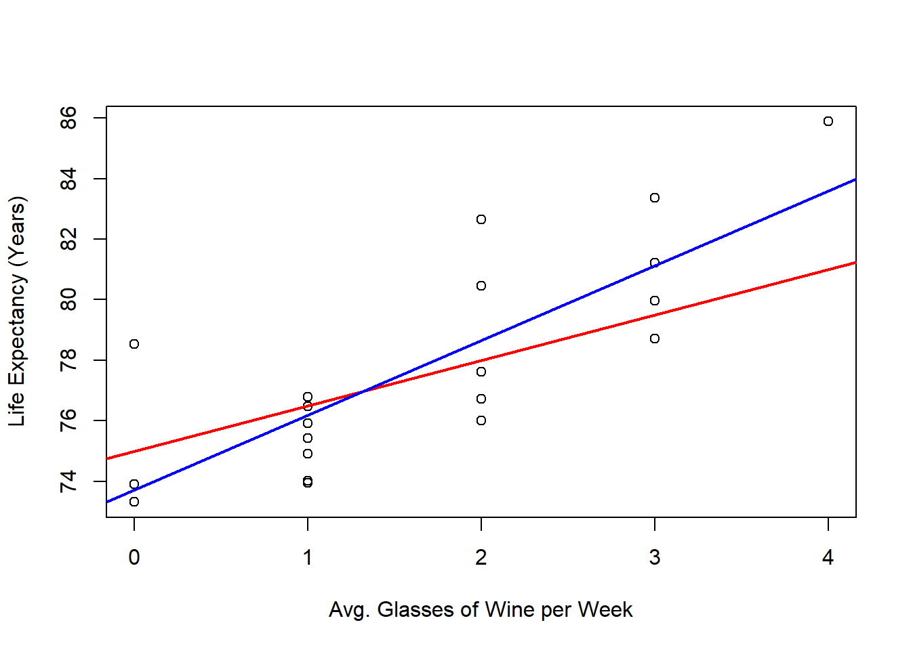
4.3 Properties of the Estimates
Before analyzing more properties of the least squares problem, let us establish the following notation:
Vector variables
- \(\mathbf{y} = (y_1,\ldots,y_n)'\).
- \(\mathbf{x} = (x_1,\ldots,x_n)'\).
- \(\mathbf{e} = (e_1,\ldots,e_n)'\).
- \(\hat{\mathbf{y}} = (\hat{y}_1,\ldots,\hat{y}_n)'\).
- \(\hat{\mathbf{e}} = (\hat{e}_1,\ldots,\hat{e}_n)'\).
- \(\mathbb{1} = (1,\ldots,1)'\).
As a bonus, we can write the Linear regression model as follows:
\[ \mathbf{y} = \beta_0 \mathbb{1} + \beta_1 \mathbf{x} + \mathbf{e} \]
Also, we will use yet another way to write the covariance formula:
Proposition 4.4 (Alternative formula for the covariance) The covariance can be alternative computed as: \[ S_{xy} = \frac{1}{n-1} \sum_{i=1}^n (x_i - \bar{x}) y_i \]
Derivation
\[\begin{align*} S_{xy} &= \frac{1}{n-1} \sum_{i=1}^n (x_i - \bar{x})(y_i - \bar{y}) & \text{} \\ &= \frac{1}{n-1} \left[ \sum_{i=1}^n x_i y_i - n \bar{x} \bar{y} \right] & \text{dist. prod.} \\ &= \frac{1}{n-1} \left[ \sum_{i=1}^n x_i y_i - \bar{x} \sum_{i=1}^n y_i \right] & \text{def. } \bar{y} \\ &= \frac{1}{n-1} \left[ \sum_{i=1}^n x_i y_i - \sum_{i=1}^n \bar{x} y_i \right] & \text{liniarity of sum} \\ &= \frac{1}{n-1} \sum_{i=1}^n (x_i y_i - \bar{x} y_i) & \text{ass. sum} \\ &= \frac{1}{n-1} \sum_{i=1}^n (x_i - \bar{x}) y_i & \text{factoring } y_i \\ \end{align*}\]
Now we can establish the following several properties of the fitted quantities.
Proposition 4.5 (Properties of the estimates.) The solution of the LS problem and the associated fitted values have the following properties:
- The estimates \(\hat{\beta}_0\) and \(\hat{\beta}_1\) are linear combinations of \(\mathbf{y} = (y_1,\ldots,y_n)'\).
- The sum of the residuals is \(0\) or \(\langle \hat{\mathbf{e}}, \mathbb{1} \rangle = 0\).
- The residuals and \(\mathbf{x}\) are orthogonal or \(\langle \hat{\mathbf{e}}, \mathbf{x} \rangle = 0\).
- The residuals and the fitted values are orthogonal or \(\langle \hat{\mathbf{e}}, \mathbf{\hat{y}} \rangle = 0\).
- The response \(\mathbf{y}\) and the fitted values \(\mathbf{\hat{y}}\) have the same average.
Derivation
- The estimates \(\hat{\beta}_0\) and \(\hat{\beta}_1\) are linear combinations of \(\mathbf{y} = (y_1,\ldots,y_n)'\).
Using Proposition 4.4
\[\begin{align*} \hat{\beta}_1 &= \frac{S_{xy}}{S_{xx}} & \text{def. } \hat{\beta}_1 \\ &= \frac{\frac{1}{n-1} \sum_{i=1}^n (x_i - \bar{x}) y_i}{S_{xx}} & \text{prop.} \\ &= \sum_{i=1}^n \frac{(x_i - \bar{x})}{(n-1)S_{xx}}y_i & \text{} \\ &= \sum_{i=1}^n a_i y_i & a_i = \frac{(x_i - \bar{x})}{(n-1)S_{xx}} \end{align*}\]
and
\[\begin{align*} \hat{\beta}_0 &= \bar{y} - \hat{\beta}_1 \bar{x} & \text{def. } \hat{\beta}_0 \\ &= \sum_{i=1}^n \frac{y_i}{n} - \sum_{i=1}^n a_i y_i \bar{x} & \text{prev. res.} \\ &= \sum_{i=1}^n \left( \frac{1}{n} - a_i \bar{x} \right)y_i & \text{lin. sum} \\ &= \sum_{i=1}^n b_i y_i & b_i = \frac{1}{n} - a_i \bar{x} \end{align*}\]
- The sum of the residuals is \(0\) or \(\langle \hat{\mathbf{e}}, \mathbb{1} \rangle = 0\).
\[\begin{align*} \langle \hat{\mathbf{e}}, \mathbb{1} \rangle &= \sum_{i=1}^n \hat{e}_i & \text{dot prod.} \\ &= \sum_{i=1}^n(y_i - \hat{\beta}_0 - \hat{\beta}_1 x_i) & \text{def. } \hat{\mathbf{e}}\\ &= \sum_{i=1}^n y_i - \sum_{i=1}^n \hat{\beta}_0 - \hat{\beta}_1 \sum_{i=1}^n x_i & \text{lin. sum} \\ &= n\bar{y} - n \hat{\beta}_0 - n \hat{\beta}_1 \bar{x} & \\ &= n\bar{y} - n (\bar{y} - \hat{\beta}_1 \bar{x}) - n \hat{\beta}_1 \bar{x} & \text{def. } \hat{\beta}_0 \\ &= n\bar{y} - n \bar{y} + n \hat{\beta}_1 \bar{x} - n \hat{\beta}_1 \bar{x} & \text{dist. } n \\ &= 0 \end{align*}\]
- The residuals and \(\mathbf{x}\) are orthogonal or \(\langle \hat{\mathbf{e}}, \mathbf{x} \rangle = 0\).
\[\begin{align*} \langle \hat{\mathbf{e}}, \mathbf{x}\rangle &= \sum_{i=1}^{n} \hat{e}_i x_i & \text{dot prod.} \\ &= \sum_{i=1}^{n} (y_i - \hat{\beta}_0 - \hat{\beta}_1 x_i)x_i & \text{def. } \hat{e}_i \\ &= \sum_{i=1}^{n} (y_i x_i - \hat{\beta}_0x_i - \hat{\beta}_1 x_i x_i) & \text{dist. } x_i \\ &= \sum_{i=1}^{n} y_i x_i - \hat{\beta}_0 \sum_{i=1}^{n} x_i - \hat{\beta}_1 \sum_{i=1}^{n} x_i x_i & \text{linearity sum} \\ &= \sum_{i=1}^{n} y_i x_i - n \hat{\beta}_0 \bar{x} - \hat{\beta}_1 \sum_{i=1}^{n} x_i^2 & \text{def. } \bar{x} \\ &= \sum_{i=1}^{n} y_i x_i - n (\bar{y} - \hat{\beta}_1 \bar{x}) \bar{x} - \hat{\beta}_1 \sum_{i=1}^{n} x_i^2 & \text{def. } \hat{\beta}_0 \\ &= \sum_{i=1}^{n} y_i x_i - n \bar{y} \bar{x} + n\hat{\beta}_1 \bar{x}^2 - \hat{\beta}_1 \sum_{i=1}^{n} x_i^2 & \text{dist. } \bar{x} \\ &= \sum_{i=1}^{n} y_i x_i - n \bar{y} \bar{x} - \hat{\beta}_1 (\sum_{i=1}^{n} x_i^2 - n\bar{x}^2) & \text{fact. } \hat{\beta}_1 \\ &= \sum_{i=1}^{n} y_i x_i - n \bar{y} \bar{x} - \frac{\sum_{i = 1}^n y_i x_i - n \bar{y} \bar{x}}{\sum_{i = 1}^n x_i^2 - n \bar{x}^2}(\sum_{i=1}^{n} x_i^2 - n\bar{x}^2) & \text{def. } \hat{\beta}_1 \\ &= \sum_{i=1}^{n} y_i x_i - n \bar{y} \bar{x} - (\sum_{i = 1}^n y_i x_i - n \bar{y} \bar{x}) \\ &=0 \end{align*}\]
- The residuals and the fitted values are orthogonal or \(\langle \hat{\mathbf{e}}, \mathbf{\hat{y}} \rangle = 0\).
\[\begin{align*} \langle \hat{\mathbf{e}}, \hat{\mathbf{y}}\rangle &= \sum_{i=1}^{n} \hat{e}_i \hat{y}_i & \text{dot prod.} \\ &= \sum_{i=1}^{n} \hat{e}_i(\hat{\beta}_0 + \hat{\beta}_1 x_i) & \text{def. } \hat{y}_i \\ &= \sum_{i=1}^{n} (\hat{e}_i \hat{\beta}_0 + \hat{e}_i \hat{\beta}_1 x_i) & \text{dist. } \hat{e}_i \\ &= \hat{\beta}_0 \sum_{i=1}^{n} \hat{e}_i + \hat{\beta}_1 \sum_{i=1}^{n} \hat{e}_i x_i & \text{lin. sum } \\ &= \hat{\beta}_1 \sum_{i=1}^{n} \hat{e}_i x_i & \sum_{i=1}^{n} \hat{e}_i = 0\\ &= \hat{\beta}_1 \langle \hat{\mathbf{e}}, \mathbf{x}\rangle & \text{def. dot prod.}\\ &= 0 & \langle \hat{\mathbf{e}}, \mathbf{x}\rangle = 0 \\ \end{align*}\]
- The response \(\mathbf{y}\) and the fitted values \(\mathbf{\hat{y}}\) have the same average.
\[\begin{align*} \frac{1}{n} \sum_{i=1}^n \hat{y}_i &= \frac{1}{n} \sum_{i=1}^n (\hat{\beta}_0 + \hat{\beta}_1 x_i) & \text{def. } \hat{y}_i \\ &= \frac{1}{n} (n \hat{\beta}_0 + \hat{\beta}_1 \sum_{i=1}^n x_i) & \text{dist. sum} \\ &= \frac{1}{n} (n \hat{\beta}_0 + n \hat{\beta}_1 \bar{x}) & \text{} \\ &= \hat{\beta}_0 + \hat{\beta}_1 \bar{x} & \text{} \\ &= \bar{y} - \hat{\beta}_1 \bar{x} + \hat{\beta}_1 \bar{x} & \text{def. } \hat{\beta}_0 \\ &= \bar{y} \\ & \\ \end{align*}\]
This derivation for (2-5) just uses simple substitutions and algebra. However, there is a more elegant derivation that starts with the normal equations and the vector notation.
Alternative derivation
- The sum of the residuals is \(0\) or \(\langle \hat{\mathbf{e}}, \mathbb{1} \rangle = 0\).
Evaluating the first normal equation in definition 4.1 at the LS solution, we have that:
\[\begin{align*} \sum_{i=1}^n (y_i-\hat\beta_0-\hat\beta_1 x_i)=0 & \implies \sum_{i=1}^n \hat{e}_i=0 & \text{def. } \hat{e}_i \\ & \implies \langle \hat{\mathbf{e}}, \mathbb{1} \rangle = 0 & \text{dot prod.} \end{align*}\]
- The residuals and \(\mathbf{x}\) are orthogonal or \(\langle \hat{\mathbf{e}}, \mathbf{x} \rangle = 0\).
Evaluating the second normal equation in definition 4.1 at the LS solution, we have that:
\[\begin{align*} \sum_{i=1}^n (y_i-\hat\beta_0-\hat\beta_1x_i)x_i=0 & \implies \sum_{i=1}^n \hat{e}_i x_i=0 & \text{def. } \hat{e}_i \\ & \implies \langle \hat{\mathbf{e}}, \mathbf{x} \rangle = 0 & \text{dot prod.} \end{align*}\]
- The residuals and and the fitted values are orthogonal or \(\langle \hat{\mathbf{e}}, \mathbf{\hat{y}} \rangle = 0\).
\[\begin{align*} \langle \hat{\mathbf{e}}, \hat{\mathbf{y}}\rangle &= \langle \hat{\mathbf{e}}, \hat\beta_0 \mathbb{1} + \hat\beta_1\mathbf x \rangle & \text{def. } \hat{\mathbf{y}}\\ &= \beta_0 \langle \hat{\mathbf{e}}, \hat \mathbb{1} \rangle + \hat\beta_1 \langle \hat{\mathbf{e}}, \mathbf x \rangle & \text{def. } \hat{\mathbf{y}}\\ &= 0 & \langle \hat{\mathbf{e}}, \mathbf{x}\rangle = 0, \langle \hat{\mathbf{e}}, \mathbf x \rangle = 0 \end{align*}\]
- The response \(\mathbf{y}\) and the fitted values \(\mathbf{\hat{y}}\) have the same average.
We have that
\[ 0 = \sum_{i=1}^n\hat{e}_i = \sum_{i=1}^n(y_i-\hat y_i) = \sum_{i=1}^n y_i - \sum_{i=1}^n\hat y_i = n \bar{y} - n \hat{\bar{y}} \]
Therefore,
\[ n \bar{y} = n \hat{\bar{y}} \implies \bar{y} = \hat{\bar{y}} \]
This alternative derivation, emphasizes a nice logical:
\[ \boxed{ \text{least-squares first-order conditions} \Longrightarrow \begin{cases} \sum_i\hat e_i=0,\\ \sum_i x_i\hat e_i=0 \end{cases} \Longrightarrow \hat{\mathbf e}\perp\mathbf 1,\mathbf x \Longrightarrow \hat{\mathbf e}\perp\hat{\mathbf y} } \]
Lastly, these properties are consequences of the least-squares optimization problem and the inclusion of an intercept. They do not require any assumptions about the distribution, mean, or variance of the errors. If a different fitting criterion is used, these identities are not generally preserved.
4.4 Centering and Standardizing the Data
Centering and standardizing the data is a very common transformation of the data before performing lnear regression. In this section we analyze the effects that centering and standardizing the data have on the data itself.
Definition 4.3 (Centered variable) Given observations \(\{x_i\}_{i=1}^n\), then the centered version of observation \(i\), denoted by \(x_i^c\) is given by: \[x_i^c = x_i - \bar{x}\]
Proposition 4.6 (Mean of a centered variable) The centered observations \(\{x_i^c\}_{i=1}^n\) have mean \(0\).
Proof
Proof. We need to show that: \[ \bar{x}^c = 0 \]
\[\begin{align*} \bar{x}^c &= \frac{1}{n} \sum_{i=1}^n x_i^c & \text{def. } \bar{x}^c \\ &= \frac{1}{n} \sum_{i=1}^n (x_i - \bar{x}) & \text{def. } x_i^c \\ &= \frac{1}{n} \left(\sum_{i=1}^n x_i - \sum_{i=1}^n \bar{x} \right) & \text{lin. sum} x_i^c \\ &= \frac{1}{n} \left(n\bar{x} - n \bar{x} \right) & \text{def. } \bar{x} \\ &= 0 \\ & \\ \end{align*}\]
Proposition 4.7 (Variance of a centered variable) The centered observations \(\{x_i^c\}_{i=1}^n\) have the same sample variance as the original observations \(\{x_i\}_{i=1}^n\).
Proof
Proof. We need to show that: \[ S_{xx}^c = S_{xx} \]
\[\begin{align*} S_{xx}^c &= \frac{1}{n-1} \sum_{i=1}^n (x_i^c - \bar{x}^c)^2 & \text{def. } S_{xx}^c \\ &= \frac{1}{n-1} \sum_{i=1}^n (x_i^c)^2 & \bar{x}^c = 0 \\ &= \frac{1}{n-1} \sum_{i=1}^n (x_i - \bar{x})^2 & \text{def. } x_i^c \\ &= S_{xx} & \text{def. } S_{xx} \\ \end{align*}\]
Proposition 4.8 (Covariance of a centered variable) The centered observations \(\{x_i^c\}_{i=1}^n\) and \(\{y_i^c\}_{i=1}^n\) have the same sample covariance as the original observations \(\{x_i\}_{i=1}^n\) and \(\{y_i\}_{i=1}^n\).
Proof
Proof. We need to show that: \[ S_{xy}^c = S_{xy} \]
\[\begin{align*} S_{xy}^c &= \frac{1}{n-1} \sum_{i=1}^n (x_i^c - \bar{x}^c)(y_i^c - \bar{y}^c) & \text{def. } S_{xy}^c \\ &= \frac{1}{n-1} \sum_{i=1}^n (x_i^c)(y_i^c) & \bar{x}^c = 0,\bar{y}^c = 0 \\ &= \frac{1}{n-1} \sum_{i=1}^n (x_i - \bar{x})(y_i - \bar{y}) & \text{def. } x_i^c,y_i^c \\ &= S_{xy} & \text{def. } S_{xy} \\ \end{align*}\]
Effect on the data:
- Location: The mean of the centered variable is zero. Centering shifts all observations by the same amount so that their sample mean becomes zero.
- Spread and shape: Centering does not change the spread (variance or standard deviation) or the shape (skewness/kurtosis) of the distribution; only the location changes.
- Units and interpretation: Units remain the same; only the zero point is shifted.
- Centering preserves all pairwise differences, that is $ x_ic-x_jc=x_i-x_j$.
- Numerical effects: Centering often reduces the magnitude of numerical values and can improve numerical stability in computations.
Definition 4.4 (Standardized variable) Given observations \(\{x_i\}_{i=1}^n\), with \(S_{xx}>0\), then the standardized version of observation \(i\), denoted by \(x_i^s\), is given by: \[x_i^s = \frac{x_i - \bar{x}}{\sqrt{S_{xx}}} = \frac{x_i^c}{\sqrt{S_{xx}}}\]
Proposition 4.9 (Correlation of standardized variable) The standardized observations \(\{x_i^s\}_{i=1}^n\) have mean of \(0\) and variance \(1\).
Proof
Proof. We need to show that: \[ \bar{x}^s = 0 \] and \[ S_{xx}^s = 1 \]
First, let us show that \(\bar{x}^s = 0\). \[\begin{align*} \bar{x}^s &= \frac{1}{n} \sum_{i=1}^n x_i^s & \text{def. } \bar{x}^s \\ &= \frac{1}{n} \sum_{i=1}^n \frac{x_i^c}{\sqrt{S_{xx}}} & \text{def. } x_i^s \\ &= \frac{1}{\sqrt{S_{xx}}}\frac{1}{n} \sum_{i=1}^n x_i^c & \text{lin. sum} \\ &= \frac{1}{\sqrt{S_{xx}}} \bar{x}^c & \text{def. } \bar{x}^c \\ &= 0 & \bar{x}^c = 0 \\ \end{align*}\]
Now let us see that the variance of the standardized observations is 1. \[\begin{align*} S_{xx}^s &= \frac{1}{n-1} \sum_{i=1}^n (x_i^s - \bar{x}^s)^2 & \text{def. } S_{xx}^s \\ &= \frac{1}{n-1} \sum_{i=1}^n (x_i^s)^2 & \bar{x}^s = 0 \\ &= \frac{1}{n-1} \sum_{i=1}^n \left(\frac{x_i - \bar{x}}{\sqrt{S_{xx}}}\right)^2 & \text{def. } x_i^s \\ &= \frac{1}{n-1} \sum_{i=1}^n \frac{(x_i - \bar{x})^2}{S_{xx}} & \\ &= \frac{1}{S_{xx}} \frac{1}{n-1} \sum_{i=1}^n (x_i - \bar{x})^2 & \text{lin. sum} \\ &= \frac{1}{S_{xx}}S_{xx} & \text{def. } S_{xx} \\ &= 1 & \\ \end{align*}\]
Effect on the data:
- Location and scale: The standardized observations have sample mean \(0\), sample variance \(1\), and therefore sample standard deviation \(1\).
- Units: Units are removed; values are expressed in “standard‑deviation units” relative to the original scale.
- Comparability: Variables measured on different original scales become directly comparable after standardization, because they share a common scale.
- Sensitivity to outliers: The standardization factor is sensitive to extreme values if the sample standard deviation is used.
Now, let us introduce the sample correlation.
Definition 4.5 (Sample Correlation) Given observations \(\{x_i\}_{i=1}^n\) and \(\{y_i\}_{i=1}^n\), with \(S_{xx}>0\) and \(S_{yy}>0\), the sample correlation is given by: \[ r_{xy} = \frac{S_{xy}}{\sqrt{S_{xx}{S_{yy}}}} \]
Proposition 4.10 (Standardized covariance is equal to correlation) The sample covariance of the standardized observations \(\{x_i^s\}_{i=1}^n\) and \(\{y_i^s\}_{i=1}^n\) is equal to the correlation of the original observations \(\{x_i\}_{i=1}^n\) and \(\{y_i\}_{i=1}^n\)
Proof
Proof. \[\begin{align*} S_{xy}^s &= \frac{1}{n-1} \sum_{i=1}^n (x_i^s - \bar{x}^s)(y_i^s - \bar{y}^s) & \text{def. } S_{xy}^s \\ &= \frac{1}{n-1} \sum_{i=1}^n x_i^s y_i^s & \bar{x}^s=0,\bar{y}^s=0 \\ &= \frac{1}{n-1} \sum_{i=1}^n \left(\frac{x_i - \bar{x}}{\sqrt{S_{xx}}}\right) \left(\frac{y_i - \bar{y}}{\sqrt{S_{yy}}}\right) & \text{def. } x^s_i,y^s_i \\ &= \frac{1}{\sqrt{S_{yy}}\sqrt{S_{xx}}}\frac{1}{n-1} \sum_{i=1}^n (x_i - \bar{x}) (y_i - \bar{y}) & \text{lin. sum} \\ &= \frac{1}{\sqrt{S_{yy}}\sqrt{S_{xx}}} S_{xy} & \text{def. } S_{xy} \\ &= r_{xy} & \text{def. } r_{xy} \\ \end{align*}\]
Finally, we show that the sample correlation is between \(-1\) and \(1\).
Proposition 4.11 (Correlation range) The sample correlation \(r_{xy}\) lies in \([-1,1]\).
Proof
Proof. First let us show that \(\frac{1}{n-1} \sum_{i=1}^n (x_i^s + y_i^s)^2=2(1 + r_{xy})\) \[\begin{align*} \frac{\sum_{i=1}^n (x_i^s + y_i^s)^2}{n-1} &= \frac{1}{n-1} \sum_{i=1}^n \left((x_i^s)^2 + 2x_i^s y_i^s + (y_i^s)^2 \right) & \\ &= \frac{\sum_{i=1}^n (x_i^s)^2}{n-1} + 2\frac{\sum_{i=1}^n x_i^sy_i^s}{n-1} + \frac{\sum_{i=1}^n (y_i^s)^2}{n-1} & \text{lin. sum} \\ &= \frac{\sum_{i=1}^n (x_i^s - \bar{x}^s)^2}{n-1} + 2\frac{\sum_{i=1}^n (x_i^s - \bar{x}^s)(y_i^s - \bar{y}^s)}{n-1} & \\ &\quad + \frac{\sum_{i=1}^n (y_i^s - \bar{y}^s)^2}{n-1} & \bar{x}^s=\bar{y}^s=0 \\ &= S_{xx}^s + 2 S_{xy}^s + S_{yy}^s & \text{def. } S_{xx}^s,S_{xy}^s,S_{yy}^s \\ &= 1 + 2r_{xy} + 1 & S_{xy}^s=r_{xy} \\ &= 2(1 + r_{xy}) & \\ \end{align*}\] similarly, it can be shown that \(\frac{1}{n-1} \sum_{i=1}^n (x_i^s - y_i^s)^2=2(1 - r_{xy})\) \[\begin{align*} \frac{\sum_{i=1}^n (x_i^s - y_i^s)^2}{n-1} &= \frac{1}{n-1} \sum_{i=1}^n \left((x_i^s)^2 - 2x_i^s y_i^s + (y_i^s)^2 \right) & \\ &= \frac{\sum_{i=1}^n (x_i^s)^2}{n-1} - 2\frac{\sum_{i=1}^n x_i^sy_i^s}{n-1} + \frac{\sum_{i=1}^n (y_i^s)^2}{n-1} & \text{lin. sum} \\ &= \frac{\sum_{i=1}^n (x_i^s - \bar{x}^s)^2}{n-1} - 2\frac{\sum_{i=1}^n (x_i^s - \bar{x}^s)(y_i^s - \bar{y}^s)}{n-1} & \\ &\quad + \frac{\sum_{i=1}^n (y_i^s - \bar{y}^s)^2}{n-1} & \bar{x}^s=\bar{y}^s=0 \\ &= S_{xx}^s - 2 S_{xy}^s + S_{yy}^s & \text{def. } S_{xx}^s,S_{xy}^s,S_{yy}^s \\ &= 1 - 2r_{xy} + 1 & S_{xy}^s=r_{xy} \\ &= 2(1 - r_{xy}) & \\ \end{align*}\] Now since, \[\frac{1}{n-1} \sum_{i=1}^n (x_i^s + y_i^s)^2, \frac{1}{n-1} \sum_{i=1}^n (x_i^s - y_i^s)^2 \geq 0\] then \[2(1 + r_{xy}) \geq 0 => r_{xy} \geq -1\] and \[2(1 - r_{xy}) \geq 0 => r_{xy} \leq 1\] Then \[ -1 \leq r_{xy} \leq 1 \]
With these results, we can analyze the effects of the following 3 scenarios on the estimated coefficients:
- Explanatory variable centered.
- Both, response and explanatory variable centered.
- Both, response and explanatory variable standardized.
4.5 Centering and Standarizing in SLR
Centering and standardizing are two common preprocessing steps for continuous variables before fitting a regression model. They are simple location-scale transformations of the data but have important practical and interpretive consequences.
4.5.1 Centered Explanatory Variable
Proposition 4.12 (Estimators with centered explanatory variable) The LS estimators \(\hat{\beta}^c_0, \hat{\beta}^c_1\) with centered explanatory variables \(\{x_i^c\}_{i=1}^n\) and original response \(\{y_i\}_{i=1}^n\) can be expressed in terms of the original estimators and data as follows: \[\hat{\beta}_1^c = \hat{\beta}_1\] and \[\hat{\beta}_0^c = \bar{y}\]
Proof
Proof. First let us compute \(\beta_1^c\) \[\begin{align*} \hat{\beta}_1^c &= \frac{S_{xy}^c}{S_{xx}^c} & \text{def. } \hat{\beta}_1^c \\ &= \frac{S_{xy}}{S_{xx}} & S_{xy}^c=S_{xy},S_{xx}^c=S_{xx}\\ &= \hat{\beta}_1 \end{align*}\] and \[\begin{align*} \hat{\beta}_0^c &= \bar{y} - \hat{\beta}_^c_1 \bar{x}^c & \text{def. } \hat{\beta}_0^c \\ &= \bar{y} - \hat{\beta}_1^c 0 & \bar{x}^c=0 \\ &= \bar{y} \end{align*}\]
Centering the explanatory variable does not change the estimated slope, while the estimated intercept becomes the sample mean of the response variable.
We have established that:
\[ \overline{\hat y}=\bar y. \]
When the explanatory variable is centered,
\[ \bar x^c=0. \]
So the fitted line is
\[ \hat y_i = \hat\beta_0^c + \hat\beta_1^cx_i^c. \]
At \(x_i^c=0\)—the original average explanatory-variable value—the fitted value is
\[ \hat\beta_0^c=\bar y. \]
This gives us an intuitive interpretation: the centered regression line passes through \((0,\bar y)\) because the original least-squares line passes through \((\bar x,\bar y)\).
We can see this in one of our example data sets, looking at the ad spending data we can perform linear regression on the original data and the centered data:
# Read Data
dat <- read.csv("Ad spending Data.csv")
# Assign data
x <- dat$Ad.Spending
y <- dat$Revenue
# Centers x
xCen <- x - mean(x)
# Linear regression on the original data
outRegOri <- lm(y ~ x)
# Linear regression on the centered data
outRegCen <- lm(y ~ xCen)
## Two plots in the same image
par(mfrow = c(1, 2))
## Original data
# Plots the points
plot(x = x,
y = y,
xlab = "Ad spending",
ylab = "Revenue",
pch = 16)
# Plots the regression line
abline(a = outRegOri$coefficients[1],
b = outRegOri$coefficients[2],
col = 'red',
lwd = 2)
## Explanatory Variable centered data
# Plots the points
plot(x = xCen,
y = y,
xlab = "Ad spending (Centered)",
ylab = "Revenue",
pch = 16)
# Plots the regression line
abline(a = outRegCen$coefficients[1],
b = outRegCen$coefficients[2],
col = 'red',
lwd = 2)
abline(v = 0,
lwd = 2)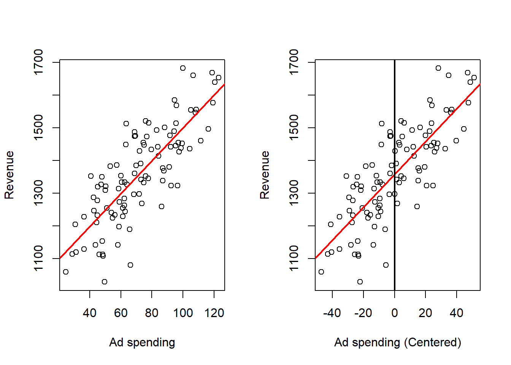
Effect on the fitted model:
- The estimated slope that measures how the response changes with the predictor is unchanged in magnitude.
- The intercept becomes the predicted response at the typical predictor value (the predictor average), which makes the intercept directly interpretable as a typical outcome.
- Predictions for any observation are unchanged after converting back to the original predictor scale.
Numerical consequences:
- Centering often improves numerical stability in computation because predictor values are closer to zero, reducing the chance of poor conditioning or round-off error.
Practical considerations:
- Centering is especially useful when the intercept at an observed or typical
predictor value is of substantive interest.
- Always record the predictor mean used for centering so that future predictions or reporting can be done on the original scale.
4.5.2 Both Variables Centered
Proposition 4.13 (Estimators with centered variables) The LS estimators \(\hat{\beta}^c_0, \hat{\beta}^c_1\) with centered explanatory variable \(\{x_i^c\}_{i=1}^n\) and centered response \(\{y_i^c\}_{i=1}^n\) can be expressed in terms of the original estimators and data as follows: \[\hat{\beta}_1^c = \hat{\beta}_1\] and \[\hat{\beta}_0^c = 0\]
Proof
Proof. First lets compute \(\beta_1^c\) \[\begin{align*} \hat{\beta}_1^c &= \frac{S_{xy}^c}{S_{xx}^c} & \text{def. } \hat{\beta}_1^c \\ &= \frac{S_{xy}}{S_{xx}} & S_{xy}^c=S_{xy},S_{xx}^c=S_{xx}\\ &= \hat{\beta}_1 \end{align*}\] and \[\begin{align*} \hat{\beta}_0^c &= \bar{y}^c - \hat{\beta}_1^c \bar{x}^c & \text{def. } \hat{\beta}_0^c \\ &= 0 - \hat{\beta}_1^c 0 & \bar{x}^c=\bar{y}^c=0 \\ &= 0 \end{align*}\]
Again, the slope doesn’t change while the estimate of the intercept becomes zero (the new mean of the centered response).
The effect of this transformation can be observed, in the following example:
# Read Data
dat <- read.csv("Ad spending Data.csv")
# Assign data
x <- dat$Ad.Spending
y <- dat$Revenue
# Centers x and y
xCen <- x - mean(x)
yCen <- y - mean(y)
# Linear regression on the original data
outRegOri <- lm(y ~ x)
# Linear regression on the centered data
outRegCen <- lm(yCen ~ xCen)
# Plots
## Two plots in the same image
par(mfrow = c(1, 2))
## Original data
# Plots the points
plot(x = x,
y = y,
xlab = "Ad spending",
ylab = "Revenue",
pch = 16)
# Plots the regression line
abline(a = outRegOri$coefficients[1],
b = outRegOri$coefficients[2],
col = 'red',
lwd = 2,
pch = 16)
## Centered data
# Plots the points
plot(x = xCen,
y = yCen,
xlab = "Ad spending (Centered)",
ylab = "Revenue",
pch = 16)
# Plots the regression line
abline(a = outRegCen$coefficients[1],
b = outRegCen$coefficients[2],
col = 'red',
lwd = 2)
abline(v = 0,
lwd = 2)
abline(h = 0,
lwd = 2)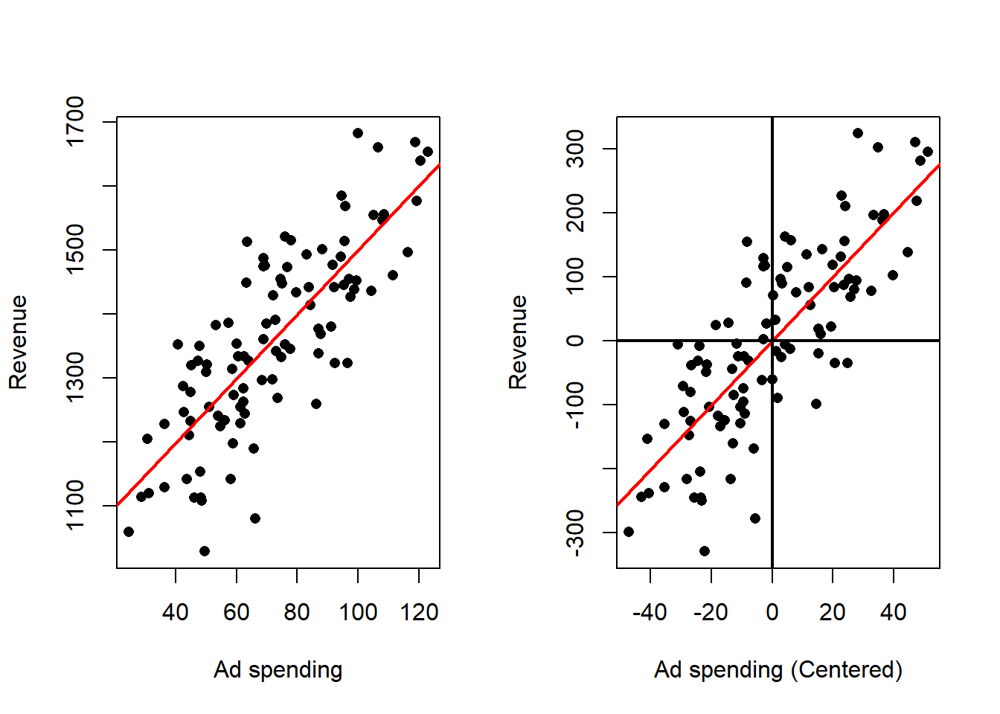
Effect on the fitted model
- The estimated intercept is zero, so the fitted line passes through the origin in centered coordinates.
- The estimated slope remains the same numerical quantity as in the original regression fitted to deviations; the relationship described by the slope is identical to the original slope.
Numerical consequences
- The estimated intercept equals zero, so its interpretation is immediate in the centered coordinates, and the slope is naturally interpreted as how deviations in the response correspond to deviations in the predictor.
- Because centering reduces magnitudes, numerical conditioning and stability often improve.
Practical considerations:
- Centering both variables is useful when the research question is framed in terms of deviations from typical values (for example, “how much above or below average does the response change when the predictor is above or below average?”).
- It simplifies algebraic decompositions of variance and can make interpretation of component sums of squares more direct.
- Keep the centering constants so that any transformations of predictions or coefficients back to original units are straightforward.
4.5.3 Both variables Standardized
Finally, we analyze the effect of standardization.
Proposition 4.14 (Estimators with standardized variables) The LS estimators \(\hat{\beta}^s_0, \hat{\beta}^s_1\) with standardized explanatory variables \(\{x_i^s\}_{i=1}^n\) and standardized responses \(\{y_i^s\}_{i=1}^n\) can be expressed in terms of the original variables as follows: \[\hat{\beta}_1^s = r_{xy}\] and \[\hat{\beta}_0^s = 0\]
Proof
Proof. First lets compute \(\beta_1^s\) \[\begin{align*} \hat{\beta}_1^s &= \frac{S_{xy}^s}{S_{xx}^s} & \text{def. } \hat{\beta}_1^s \\ &= \frac{r_{xy}}{1} & S_{xy}^s=r_{xy},S_{xx}^s=1\\ &= r_{xy} \end{align*}\] and \[\begin{align*} \hat{\beta}_0^s &= \bar{y}^s - \hat{\beta}_1^s \bar{x}^s & \text{def. } \hat{\beta}_0^s \\ &= 0 - \hat{\beta}_1^s 0 & \bar{x}^s=\bar{y}^s=0 \\ &= 0 \end{align*}\]
So, the estimate of the slope is the sample correlation of the original observations. Which implies that the slope of the regression analysis after standardizing both variables is going to be in the interval \([-1, 1]\).
Again, we can see this graphically:
# Read Data
dat <- read.csv("Ad spending Data.csv")
# Assign data
x <- dat$Ad.Spending
y <- dat$Revenue
# Standardizes x and y
xSta <- (x - mean(x))/sqrt(var(x))
ySta <- (y - mean(y))/sqrt(var(y))
# Linear regression on the original data
outRegOri <- lm(y ~ x)
# Linear regression on the standard data
outRegSta <- lm(ySta ~ xSta)
# Plots
## Two plots in the same image
par(mfrow = c(1, 2))
## Original data
# Plots the points
plot(x = x,
y = y,
xlab = "Ad spending",
ylab = "Revenue",
pch = 16)
# Plots the regression line
abline(a = outRegOri$coefficients[1],
b = outRegOri$coefficients[2],
col = 'red',
lwd = 2)
## Standard data
# Plots the points
plot(x = xSta,
y = ySta,
xlab = "Ad spending (Standardized)",
ylab = "Revenue (Standardized)",
pch = 16)
# Plots the regression line
abline(a = outRegSta$coefficients[1],
b = outRegSta$coefficients[2],
col = 'red',
lwd = 2)
abline(v = 0,
lwd = 2)
abline(h = 0,
lwd = 2)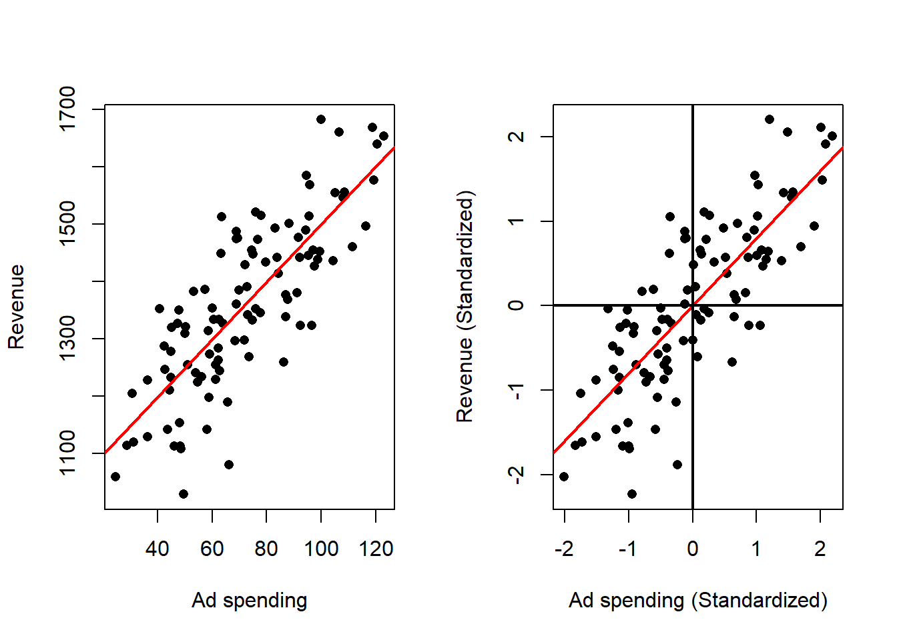
Effect on the fitted model:
The estimated intercept is zero in the standardized coordinates; the estimated slope is unitless and expresses change in the response in standard‑deviation units per one standard‑deviation change in the predictor.
In the simple linear setting, the standardized slope equals the correlation between predictor and response.
Numerical consequences:
- Standardization often improves numerical conditioning.
4.5.4 Summary of Centering and Standarizing in SLR
- Centering \(x\) leaves the slope unchanged and changes the intercept to \(\bar y\).
- Centering both \(x\) and \(y\) leaves the slope unchanged and makes the intercept \(0\).
- Standardizing both variables makes the intercept \(0\) and the slope equal to \(r_{xy}\).
- These transformations change the numerical representation of the fitted model but not the fitted relationship after converting between scales.
4.6 Coefficient of Determination
So far we have focused on finding the “best” line by estimating the coefficients that minimize the sum of squared errors. We have derived the least‑squares estimates, obtained fitted values and residuals, and discussed some algebraic properties of those estimates. What remains is to evaluate how well the fitted line captures the variability in the response. The principal summary measure for this purpose in linear regression is the coefficient of determination. Before defining it, we introduce a few standard quantities that decompose the total variability of the response.
Definition 4.6 (Total Sum of Squares) The Total Sum of Squares is given by: \[SS_{tot} = \sum_{i=1}^n (y_i - \bar{y})^2\]
The Total Sum of Squares is the fundamental measure of the total variability present in the observed responses. It quantifies how much the individual response values deviate, collectively, from their overall average. In other words, it is the baseline amount of variation in the response before any predictor information is used. You can think of it in several ways:
- It is proportional to the sample variance.
- It is what you obtain when solving the following minimization problem:
\[ \min_{\beta_0} \sum_{i=1}^n (y_i - \beta_0)^2, \]
that is, the minimum sum of squared errors obtained when the explanatory variable is not used and every response is predicted by a single constant.
Definition 4.7 (Residual Sum of Squares) The Residual Sum of Squares is given by: \[ SS_{res} = \sum_{i=1}^n(\hat{e}_i)^2 = \sum_{i=1}^n(y_i - \hat{y}_i)^2\]
The Residual Sum of Squares (RSS) is the aggregate measure of the discrepancies between observed responses and the responses predicted by a fitted regression model. Concretely, it sums the squared prediction errors (residuals) across all observations and therefore quantifies the total unexplained variation left after fitting the model.
Interpretation:
- Unexplained variability: RSS represents the portion of the data’s variability that the model does not capture. A smaller RSS indicates that the model’s predictions are closer to the observed values and that less variability remains unexplained.
- Measure of fit error: RSS is a direct summary of model misspecification; it expresses how far, in aggregate, observed outcomes stray from the fitted line.
Key properties:
- Nonnegative and additive: RSS cannot be negative, and it increases when residuals grow larger in magnitude.
- Minimization target: In ordinary least squares, the fitted coefficients are chosen to minimize RSS; thus RSS at the fitted coefficients is the smallest possible sum of squared residuals for the chosen model form.
Role in regression analysis:
- Diagnostic and evaluation metric: RSS is used together with total variability to compute proportions of variance explained and other fit measures.
- Guide to improvement: Large RSS relative to total variability suggests the model is missing important structure or that noise is substantial; small RSS suggests good in‑sample fit (but not necessarily good out‑of‑sample performance).
Practical notes:
- Dependence on scale and sample size: RSS depends on the units of the response and on the number of observations, so it is most useful in relative comparisons (e.g., between models on the same dataset) rather than as an absolute measure across datasets.
- Use with diagnostics: Interpreting RSS should be accompanied by residual diagnostics and validation checks to ensure a low RSS reflects genuine explanatory power..
Definition 4.8 (Explained Sum of Squares) The Explained Sum of Squares is given by: \[ SS_{reg} = \sum_{i=1}^n(\hat{y}_i - \bar{y})^2 = \sum_{i=1}^n(\hat{y}_i - \hat{\bar{y}})^2 \]
The Explained Sum of Squares is the portion of the total variability in the response that is accounted for by the fitted regression model. It quantifies how much of the variation in the observed responses is captured by the model’s fitted values, as compared with using only a single constant (the sample mean).
Interpretation:
- It measures the improvement in fit achieved by the regression line relative to the baseline of predicting the mean for every observation.
- A larger explained sum of squares indicates that the model captures more of the systematic variation in the response and thus provides a better summary of the relationship between predictor and response.
Key properties:
- Nonnegative: it cannot be negative, because the fitted model cannot explain less variation than the baseline in a least‑squares fit.
- Bounded above by the total variability: the explained portion cannot exceed the total variability present in the data, we will see this next.
Proposition 4.15 (Sum of Squares Decomposition) The \(SS_{tot}\), \(SS_{res}\) and \(SS_{reg}\) are related by the following identity: \[ SS_{tot} = SS_{reg} + SS_{res} \]
Proof
Proof. \[\begin{align*} SS_{tot} &= \sum_{i=1}^n(y_i - \bar{y})^2 & \text{def. } SS_{tot} \\ &= \sum_{i=1}^n(y_i - \hat{y}_i + \hat{y}_i - \bar{y})^2 & \text{add } (0=- \hat{y}_i + \hat{y}_i) \\ &= \sum_{i=1}^n\left((y_i - \hat{y}_i)^2 + 2(y_i - \hat{y}_i)(\hat{y}_i - \bar{y}) + (\hat{y}_i - \bar{y})^2\right) & \\ &= \sum_{i=1}^n(y_i - \hat{y}_i)^2 + 2 \sum_{i=1}^n(y_i - \hat{y}_i)(\hat{y}_i - \bar{y}) + \sum_{i=1}^n(\hat{y}_i - \bar{y})^2 & \text{lin. sum} \\ &= SS_{res} + 2 \sum_{i=1}^n(y_i - \hat{y}_i)(\hat{y}_i - \bar{y}) + SS_{reg} & \text{def. } SS_{res}, SS_{reg} \\ &= SS_{res} + 2 \sum_{i=1}^n\hat{e}_i(\hat{y}_i - \bar{y}) + SS_{reg} & \text{def. } \hat{e}_i \\ &= SS_{res} + 2 \sum_{i=1}^n(\hat{e}_i\hat{y}_i - \hat{e}_i\bar{y}) + SS_{reg} & \\ &= SS_{res} + 2 \sum_{i=1}^n\hat{e}_i\hat{y}_i - 2 \sum_{i=1}^n\hat{e}_i\bar{y} + SS_{reg} & \text{lin. sum} \\ &= SS_{res} + 2 <\hat{\mathbf{e}},\hat{\mathbf{y}}> - 2 \sum_{i=1}^n\hat{e}_i\bar{y} + SS_{reg} & \text{def. cross-prod.} \\ &= SS_{res} - 2 \sum_{i=1}^n\hat{e}_i\bar{y} + SS_{reg} & <\hat{\mathbf{e}},\hat{\mathbf{y}}>=0 \\ &= SS_{res} - 2 \bar{y} \sum_{i=1}^n\hat{e}_i + SS_{reg} & \text{lin. sum} \\ &= SS_{res} + SS_{reg} & \sum_{i=1}^n\hat{e}_i = 0 \\ \end{align*}\]
Definition 4.9 (Coefficient of Determination) If \(SS_{tot}>0\), the Coefficient of Determination is given by: \[ R^2 = \frac{SS_{reg}}{SS_{tot}} \]
Proposition 4.16 (Alternate Definition of the Coefficient of Determination) If \(SS_{tot}>0\), the Coefficient of Determination can be defined alternatively as: \[ R^2 = 1 - \frac{SS_{res}}{SS_{tot}} \]
Proof
Proof. \[\begin{align*} R^2 &= \frac{SS_{reg}}{SS_{tot}} & \text{def. } R^2 \\ &= \frac{SS_{tot} - SS_{res}}{SS_{tot}} & SS_{tot} = SS_{res} + SS_{reg} \\ &= \frac{SS_{tot}}{SS_{tot}} - \frac{SS_{res}}{SS_{tot}} & \\ &= 1 - \frac{SS_{res}}{SS_{tot}} & \\ \end{align*}\]
Proposition 4.17 (Coefficient of Determination and Correlation) The Coefficient of Determination is related to the sample correlation by \[ R^2 = r_{xy}^2 \]
Proof
Proof. First let us express \(SS_{reg}\) in a more convenient way:
\[\begin{align*} SS_{reg} &= \sum_{i=1}^n(\hat{y}_i - \bar{y})^2 & \text{def. } SS_{reg} \\ &= \sum_{i=1}^n(\hat{\beta}_0 + \hat{\beta}_1 x_i - \bar{y})^2 & \text{def. } \hat{y}_i \\ &= \sum_{i=1}^n(\bar{y} - \hat{\beta}_1 \bar{x} + \hat{\beta}_1 x_i - \bar{y})^2 & \text{def. } \hat{\beta}_0 \\ &= \sum_{i=1}^n(\hat{\beta}_1 x_i - \hat{\beta}_1 \bar{x})^2 & \\ &= \sum_{i=1}^n\hat{\beta}_1^2(x_i - \bar{x})^2 & \\ &= \hat{\beta}_1^2 \sum_{i=1}^n(x_i - \bar{x})^2 & \text{lin. sum}\\ &= \hat{\beta}_1^2 S_{xx} (n-1) & \text{def. } S_{xx} \\ &= \left( \frac{S_{xy}}{S_{xx}} \right)^2 S_{xx} (n-1) & \text{def. } \hat{\beta}_1 \\ &= \frac{S_{xy}^2}{S_{xx}^2} S_{xx} (n-1) & \\ &= \frac{S_{xy}^2}{S_{xx}} (n-1) & \\ \end{align*}\] Now, note that: \[ SS_{tot} = (n-1)S_{yy} \] Then \[\begin{align*} R^2 &= \frac{SS_{reg}}{SS_{tot}} & \text{def. } R^2 \\ &= \frac{\frac{S_{xy}^2}{S_{xx}} (n-1)}{S_{yy} (n-1)} & \text{prev. res.} \\ &= \frac{S_{xy}^2}{S_{xx}S_{yy}} & \\ &= \left[\frac{S_{xy}}{\sqrt{S_{xx}S_{yy}}}\right]^2 & \\ &= r_{xy}^2 & \text{def. } r_{xy} \\ \end{align*}\]
Proposition 4.18 (Range of the coefficient of determination) The Coefficient of Determination is between 0 and 1.
Proof
Proof. \[ 0\le r_{xy}^2\le1 \quad\Longrightarrow\quad \boxed{0\le R^2\le1}. \]
The coefficient of determination is a summary measure that quantifies the fraction of the total variability in the response that is accounted for by a regression model. It expresses how much of the observed variation can be attributed to the systematic relationship captured by the model, as opposed to unexplained variation.
Interpretation:
- Proportion explained: The coefficient gives the proportion of the response variability that the model explains. A larger value indicates that a greater share of the variability is captured by the fitted relationship.
- Measure of fit: It provides a single, unitless index of in‑sample goodness of fit, useful for judging how well the model summarizes the observed data.
Key properties:
- Boundedness: Under the usual regression with an intercept, the coefficient lies between zero and one. Values near one indicate that most variability is explained; values near zero indicate little explanatory power.
- Relation to explained and unexplained variation: The coefficient is obtained by comparing the variation explained by the model with the total variation present in the data; it increases as explained variation grows or unexplained variation shrinks.
- Equivalence in simple linear regression: In the simple linear case, the coefficient equals the square of the sample correlation between predictor and response, linking it directly to linear association strength.
Practical considerations and limitations:
- Not a test of causation: A high coefficient does not imply a causal relationship; it only describes the extent of linear association in the sample.
- Dependence on context and scale: While unitless, the coefficient’s practical meaning depends on the problem domain; what constitutes a “good” value varies by field and by the intrinsic variability of the outcome.
- Reliance on model assumptions: Interpretation in terms of explained variance assumes the model form is appropriate; violations of assumptions or influential observations can make the coefficient misleading.
Use in practice:
- Primary summary of fit: It is widely used as a convenient summary of how well a regression model captures observed variation.
- Complementary diagnostics: It should be interpreted together with residual analysis, model validation, and, for model selection, complexity‑adjusted criteria or predictive performance measures.
Summary
The coefficient of determination quantifies the share of total variability explained by a regression model. It is a useful, unitless index of in‑sample fit, but it must be interpreted with attention to model form, complexity, and the substantive context.
The larger the \(R^2\), the better the fit of the linear model. A low \(R^2\) can arise for two reasons:
- The data are not well described by a linear relationship. In that case a linear model will explain little of the association (although sometimes a linear model can still serve as a useful approximation to a nonlinear relationship).
- The data are noisy. Substantial noise can reduce \(R^2\) even when the true relationship between the variables is linear.
As an example of noisy data, recall the Ad spending data. The data was generated under a linear model, so the relationship between the variables is linear. You can verify this by looking at the code where the data is generated in the introduction. In the following example the effects of adding additional noise to the data can be analyzed. Three noise levels are considered:
- Level1: Small Noise.
- Level2: Medium Noise.
- Level3: High noise.
# Sets seed for noise randomness
set.seed(9142025)
# Read Data
dat <- read.csv("Ad spending Data.csv")
# Assign data
x <- dat$Ad.Spending
y <- dat$Revenue
# Adds Noise
yNoiLe1 <- y + rnorm(n = 100, sd = 50)
yNoiLe2 <- y + rnorm(n = 100, sd = 200)
yNoiLe3 <- y + rnorm(n = 100, sd = 500)
# Auxiliary Variables
ymax <- max(y, yNoiLe1, yNoiLe2, yNoiLe3)
ymin <- min(y, yNoiLe1, yNoiLe2, yNoiLe3)
xmax = max(x)
xmin = min(x)
# Performs Linear Regression
outRegOri <- lm(y ~ x)
outRegNoiLe1 <- lm(yNoiLe1 ~ x)
outRegNoiLe2 <- lm(yNoiLe2 ~ x)
outRegNoiLe3 <- lm(yNoiLe3 ~ x)
# Plots
par(mfrow = c(2, 2))
plot(x = x,
y = y,
xlab = "Ad spending",
ylab = "Revenue",
main = "Original Data",
ylim = c(ymin, ymax),
xlim = c(xmin, xmax))
# Plots the regression line
abline(a = outRegOri$coefficients[1],
b = outRegOri$coefficients[2],
col = 'red',
lwd = 2)
plot(x = x,
y = yNoiLe1,
xlab = "Ad spending",
ylab = "Revenue",
main = "Small Noise Added",
ylim = c(ymin, ymax),
xlim = c(xmin, xmax))
# Plots the regression line
abline(a = outRegNoiLe1$coefficients[1],
b = outRegNoiLe1$coefficients[2],
col = 'red',
lwd = 2)
plot(x = x,
y = yNoiLe2,
xlab = "Ad spending",
ylab = "Revenue",
main = "Medium Noise Added",
ylim = c(ymin, ymax),
xlim = c(xmin, xmax))
# Plots the regression line
abline(a = outRegNoiLe2$coefficients[1],
b = outRegNoiLe2$coefficients[2],
col = 'red',
lwd = 2)
plot(x = x,
y = yNoiLe3,
xlab = "Ad spending",
ylab = "Revenue",
main = "High Noise Added",
ylim = c(ymin, ymax),
xlim = c(xmin, xmax))
# Plots the regression line
abline(a = outRegNoiLe3$coefficients[1],
b = outRegNoiLe3$coefficients[2],
col = 'red',
lwd = 2)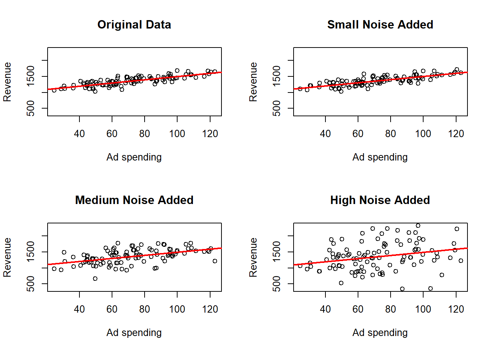
## [1] "Original Data LM summary"##
## Call:
## lm(formula = y ~ x)
##
## Residuals:
## Min 1Q Median 3Q Max
## -248.394 -58.805 3.782 63.577 196.745
##
## Coefficients:
## Estimate Std. Error t value Pr(>|t|)
## (Intercept) 997.3894 28.8185 34.61 <2e-16 ***
## x 5.0247 0.3818 13.16 <2e-16 ***
## ---
## Signif. codes: 0 '***' 0.001 '**' 0.01 '*' 0.05 '.' 0.1 ' ' 1
##
## Residual standard error: 89.01 on 98 degrees of freedom
## Multiple R-squared: 0.6386, Adjusted R-squared: 0.6349
## F-statistic: 173.2 on 1 and 98 DF, p-value: < 2.2e-16## [1] "Level 1 LM summary"##
## Call:
## lm(formula = yNoiLe1 ~ x)
##
## Residuals:
## Min 1Q Median 3Q Max
## -276.39 -69.79 17.82 73.26 209.52
##
## Coefficients:
## Estimate Std. Error t value Pr(>|t|)
## (Intercept) 985.2762 31.5963 31.18 <2e-16 ***
## x 5.3080 0.4186 12.68 <2e-16 ***
## ---
## Signif. codes: 0 '***' 0.001 '**' 0.01 '*' 0.05 '.' 0.1 ' ' 1
##
## Residual standard error: 97.58 on 98 degrees of freedom
## Multiple R-squared: 0.6213, Adjusted R-squared: 0.6174
## F-statistic: 160.8 on 1 and 98 DF, p-value: < 2.2e-16## [1] "Level 2 LM summary"##
## Call:
## lm(formula = yNoiLe2 ~ x)
##
## Residuals:
## Min 1Q Median 3Q Max
## -624.54 -137.77 11.28 160.65 514.78
##
## Coefficients:
## Estimate Std. Error t value Pr(>|t|)
## (Intercept) 1034.0315 70.8342 14.598 < 2e-16 ***
## x 4.5527 0.9385 4.851 4.63e-06 ***
## ---
## Signif. codes: 0 '***' 0.001 '**' 0.01 '*' 0.05 '.' 0.1 ' ' 1
##
## Residual standard error: 218.8 on 98 degrees of freedom
## Multiple R-squared: 0.1936, Adjusted R-squared: 0.1854
## F-statistic: 23.53 on 1 and 98 DF, p-value: 4.63e-06## [1] "Level 3 LM summary"##
## Call:
## lm(formula = yNoiLe3 ~ x)
##
## Residuals:
## Min 1Q Median 3Q Max
## -1313.46 -275.87 77.13 322.09 959.94
##
## Coefficients:
## Estimate Std. Error t value Pr(>|t|)
## (Intercept) 923.902 135.408 6.823 7.43e-10 ***
## x 6.393 1.794 3.564 0.000567 ***
## ---
## Signif. codes: 0 '***' 0.001 '**' 0.01 '*' 0.05 '.' 0.1 ' ' 1
##
## Residual standard error: 418.2 on 98 degrees of freedom
## Multiple R-squared: 0.1147, Adjusted R-squared: 0.1057
## F-statistic: 12.7 on 1 and 98 DF, p-value: 0.0005672here where we observe that the point cloud is more dispersed and looks less than a line the more noise is added, but the estimated regression line changes only a little bit. We can also see how the \(R^2\) generally becomes smaller as more noise is added.
4.7 Residual Analysis
While the coefficient of determination (\(R^2\)) provides a measure of how well the data fit a linear model, it cannot explain why the fit is good or poor. To gain insights into potential problems with the model, the most straightforward approach is to examine the residuals or estimated errors. Residual analysis helps identify systematic patterns that indicate that the fitted linear model may be inadequate.
Currently, we focus on four common problems that residual analysis can reveal:
Nonlinear structure
If the relationship between the predictor and response is nonlinear, then a linear model will not capture the true pattern, leading to systematic patterns in the residuals.Changing residual spread
Non-constant variance means that the spread of the residuals varies with the fitted values or predictor, which violates a key assumption of linear regression and can affect inference.Unusual observations
Outliers are observations that deviate markedly from the overall pattern and can disproportionately influence the estimated regression coefficients or inflate measures of error.Structure associated with variables not included in the model
Omitting relevant variables leads can cause the model to systematically under- or over-predict responses based on unaccounted factors.
4.7.1 Non-linear regression function
In many real-world situations, the relationship between the variables of interest may not be well described by a simple straight line. While linear regression is a powerful and widely used technique, it implicitly relies on the assumption that the true relationship between the predictor and response variables is linear, even if no such assumption is stated explicitly.
However, when this assumption does not hold, the linear model can lead to poor fits, systematic bias, and misleading inferences. To better understand the nature of the relationship, it is important to examine the fitted regression function and related residuals carefully.
Consider the example of analyzing the relationship between burger price and the number of burgers sold.
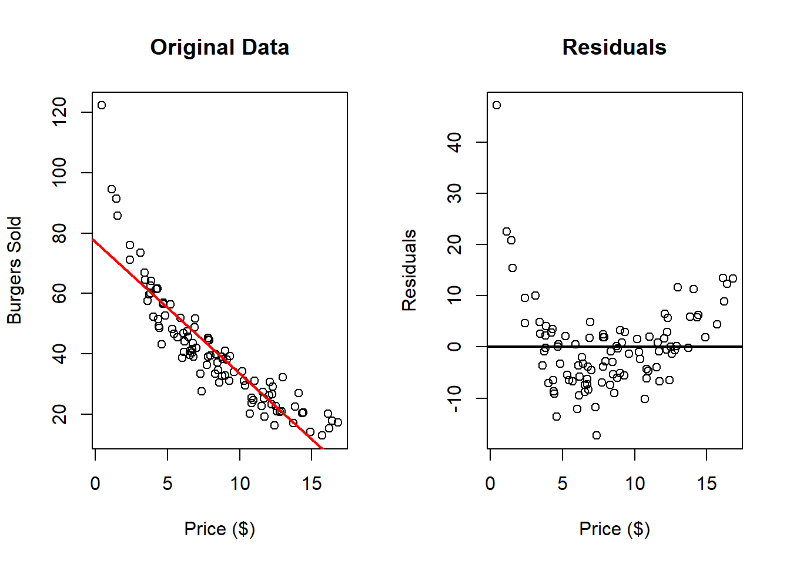
Here we can clearly appreciate that there is something wrong. The residuals clearly indicate that a nonlinear relationship is present in the data. One can solve these problem by transforming one or both of the variables and then applying linear regression. Common transformations functions \(g\) are (but are not limited to):- \(g(x) = x^2\)
- \(g(x) = \sqrt{x}\)
- \(g(x) = log(x)\)
These transformations can be applied to the explanatory variable, to the dependent variable of both.
In the next example we work with \(log(\text{Burgers Sold})\) instead of directly working with “Burgers Sold”.
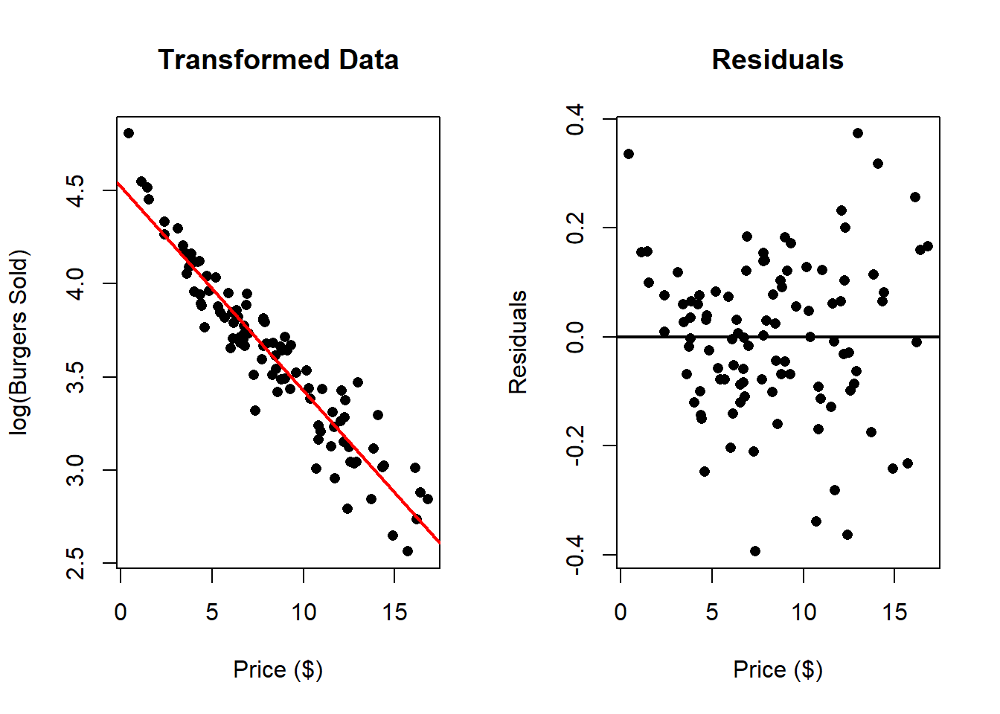
In this case there seems to be a much better fit. We can compare this to the following transformation \(\log{(\text{Price})}\):
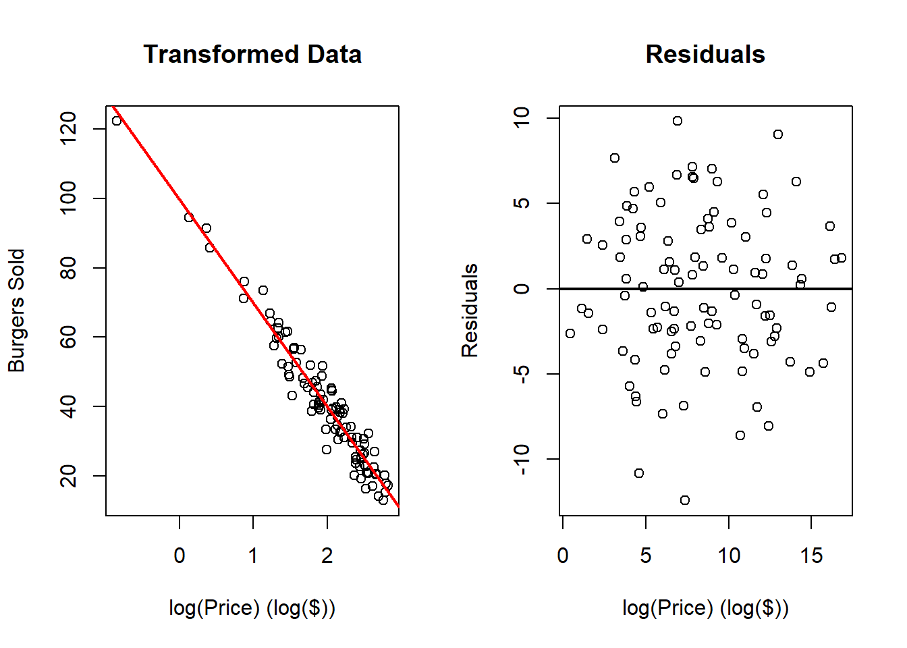
It this case, these transformations improve the fit of the model, however which one is the best one?
One can check the \(R^2\) of the different transformations:
dat <- read.csv("Burger Data.csv")
x <- dat$Price
y <- dat$Burgers
outRegOri <- lm(y ~ x)
outRegTr1 <- lm(log(y) ~ x)
outRegTr2 <- lm(y ~ log(x))
summary(outRegOri)##
## Call:
## lm(formula = y ~ x)
##
## Residuals:
## Min 1Q Median 3Q Max
## -17.310 -5.637 -0.553 2.899 47.182
##
## Coefficients:
## Estimate Std. Error t value Pr(>|t|)
## (Intercept) 76.9130 2.0098 38.27 <2e-16 ***
## x -4.3417 0.2194 -19.79 <2e-16 ***
## ---
## Signif. codes: 0 '***' 0.001 '**' 0.01 '*' 0.05 '.' 0.1 ' ' 1
##
## Residual standard error: 8.522 on 98 degrees of freedom
## Multiple R-squared: 0.7999, Adjusted R-squared: 0.7978
## F-statistic: 391.7 on 1 and 98 DF, p-value: < 2.2e-16##
## Call:
## lm(formula = log(y) ~ x)
##
## Residuals:
## Min 1Q Median 3Q Max
## -0.39409 -0.08669 0.00065 0.09325 0.37302
##
## Coefficients:
## Estimate Std. Error t value Pr(>|t|)
## (Intercept) 4.518050 0.034072 132.60 <2e-16 ***
## x -0.109240 0.003719 -29.37 <2e-16 ***
## ---
## Signif. codes: 0 '***' 0.001 '**' 0.01 '*' 0.05 '.' 0.1 ' ' 1
##
## Residual standard error: 0.1445 on 98 degrees of freedom
## Multiple R-squared: 0.898, Adjusted R-squared: 0.897
## F-statistic: 862.8 on 1 and 98 DF, p-value: < 2.2e-16##
## Call:
## lm(formula = y ~ log(x))
##
## Residuals:
## Min 1Q Median 3Q Max
## -12.4312 -2.8468 0.1724 3.1830 9.8330
##
## Coefficients:
## Estimate Std. Error t value Pr(>|t|)
## (Intercept) 99.6184 1.4927 66.74 <2e-16 ***
## log(x) -29.8274 0.7237 -41.22 <2e-16 ***
## ---
## Signif. codes: 0 '***' 0.001 '**' 0.01 '*' 0.05 '.' 0.1 ' ' 1
##
## Residual standard error: 4.449 on 98 degrees of freedom
## Multiple R-squared: 0.9455, Adjusted R-squared: 0.9449
## F-statistic: 1699 on 1 and 98 DF, p-value: < 2.2e-16\(R^2\) can compare models fitted to the same response scale, but it cannot fairly compare models when the response itself has been transformed. To compare such models, we need a common performance measure evaluated on the original response scale.
We will see other ways to choose the transformation later.
Why non-linearity matters:
- Violation of assumptions: Non-linearity violates the key assumption of linear regression that the expected response changes linearly with the predictor. This can lead to biased estimates and unreliable inference.
- Inadequate modeling: A simple straight line may oversimplify the true relationship, missing important features such as thresholds, plateaus, or other non-linear behaviors.
- Need for model refinement: Detecting non-linearity encourages the use of more flexible modeling approaches, such as polynomial regression, spline regression, or other non-linear models that better capture the underlying pattern.
Addressing non-linearity:
Visualization: Always examine scatterplots of the data accompanied by the fitted regression line and residuals plots to identify non-linear patterns visually.
Transformations: Applying data transformations (e.g., logarithmic, square root) to one or both variables can sometimes linearize the relationship.
Non-linear models: Use specialized non-linear regression models that explicitly accommodate curves and other complex relationships.
In summary, recognizing when the relationship is non-linear is crucial for building accurate models. By analyzing the fitted line and residuals plots, analysts can identify these cases and take appropriate steps to improve their modeling approach, leading to better understanding and more reliable predictions.
4.7.2 Changing Residual Spread
Sometimes the magnitude of the residuals changes systematically across the range of the explanatory variable. For example, residuals may be tightly concentrated for small values of \(x\) and more dispersed for larger values. This pattern will later be formalized through an assumption about the variance of the errors and is commonly called heteroscedasticity.
An illustrative example
Consider a new data set with the heights of several children. Suppose we believe there is a linear relationship between a child’s age and height: as children grow older, their height increases. However, it is also reasonable to expect that the variability in height differences increases for older children than for younger children: taller children tend to have more variation in height than shorter children.
This expectation can be visualized in a simulated data set where the residuals (the deviations from the fitted line) tend to increase with age, forming a funnel shape in the residuals plot.
dat <- read.csv("Height Data.csv")
outReg <- lm(Height ~ Age, data = dat)
# Original Data
par(mfrow = c(1, 2))
plot(x = dat$Age,
y = dat$Height,
xlab = "Age (years)",
ylab = "Height (in)",
main = "Original Data",
pch = 16)
abline(a = outReg$coefficients[1],
b = outReg$coefficients[2],
col = 'red',
lwd = 2)
# Residuals
plot(x = dat$Age,
y = outReg$residuals,
xlab = "Age (years)",
ylab = "Residuals (in)",
main = "Residuals",
pch = 16)
abline(h = 0,
lwd = 2)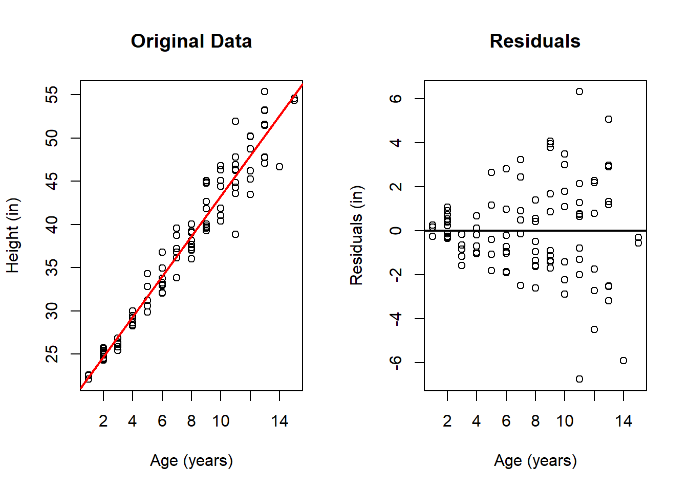
While one can infer this error behavior from the original scatter plot, the residuals plot makes this pattern much more clearly visible. In the residual plot, it is evident that the spread of the residuals increases with age of the children. While this is not inherently problematic when using least squares estimation, it may be advisable to consider alternative methods that do not penalize all errors equally—particularly the larger errors at later ages—such as weighted least squares.
While heteroscedasticity does not bias the estimates of the regression coefficients themselves, it affects the accuracy and precision of these estimates and the associated inference metrics. Specifically, standard errors may be underestimated or overestimated, leading to incorrect conclusions about the significance of predictors.
Several strategies can be used to address heteroscedasticity, including:
- Applying data transformations (e.g., logarithmic, square root) to stabilize the variance.
- Using heteroscedasticity-robust standard errors that adjust the inference procedures to account for non-constant variance.
- Employing alternative modeling approaches such as weighted least squares, where observations are weighted inversely proportional to their variance, or explicitly modeling the variance function.
4.7.3 Outliers
In the context of linear regression analysis, outliers are data points that do not conform to the general pattern established by the majority of the observations. While most data points may align well with the fitted regression line, a few observations might deviate substantially from this pattern, standing out as unusual or extreme relative to the rest.
Outliers can arise for various reasons, including measurement errors, data entry mistakes, or genuinely rare or unusual cases. Regardless of their origin, these outlying points can have a disproportionate influence on the results of the regression analysis, often skewing the estimated coefficients, inflating the residuals, and affecting overall model fit.
It is important to identify and understand outliers because they can mislead the analysis. They may unduly influence the estimated relationship between the predictor and response variables. Outliers can substantially change the estimated slope and intercept. Moreover, outliers can inflate measures of error, such as the residual sum of squares, making the model seem less accurate than it truly is for the majority of the data.
Detecting outliers typically involves examining residuals, especially those that are unusually large or small compared to typical residuals. Residual plots can reveal these points as isolated dots that are far away from the bulk of the data cloud. Statistical rules and diagnostic tools can also be used to flag potential outliers for further investigation.
Once identified, outliers demand careful consideration. If an unusual observation results from a confirmed recording or measurement error, correct the error when possible. Genuine observations should not be removed solely because they are unusual; their context and influence should be investigated.
Dealing with outliers involves balancing the goal of accurately modeling the typical relationship while acknowledging that outliers can carry important information or indicate special cases. Sometimes, it is appropriate to analyze the data both with and without outliers, or to apply robust regression methods designed to reduce the influence of extreme observations.
In the next example, we work with the Wine data set and add outliers, to see the effect this might have on the estimation.
dat <- read.csv("Wine Data.csv")
x <- dat$Glasses
y <- dat$Years
ymin <- min(y, max(y) - 22)
ymax <- max(y, min(y) + 22)
xmin <- min(x)
xmax <- max(x)
par(mfrow = c(2, 2))
# No Outliers
outRegNoo <- lm(y ~ x)
plot(x = x,
y = y,
ylim = c(ymin, ymax),
xlim = c(xmin, xmax),
xlab = "Average Glasses per Week",
ylab = "Life Expectancy",
main = "No Outliers",
pch = 16)
abline(a = outRegNoo$coefficients[1],
b = outRegNoo$coefficients[2],
col = 'red',
lwd = 2)
# Outlier on the left side
# Adds Observation
x <- c(x, 0)
y <- c(y, 90)
outRegLef <- lm(y ~ x)
plot(x = x,
y = y,
ylim = c(ymin, ymax),
xlim = c(xmin, xmax),
xlab = "Average Glasses per Week",
ylab = "Life Expectancy",
main = "Outlier Left",
pch = 16)
points(x = x[21],
y = y[21],
pch = 16,
col = 'blue')
abline(a = outRegLef$coefficients[1],
b = outRegLef$coefficients[2],
col = 'red',
lwd = 2)
# Outlier on the right side
# Adds Observation
x[21] <- 4
y[21] <- 68
outRegRig <- lm(y ~ x)
plot(x = x,
y = y,
ylim = c(ymin, ymax),
xlim = c(xmin, xmax),
xlab = "Average Glasses per Week",
ylab = "Life Expectancy",
main = "Right Outliers",
pch = 16)
points(x = x[21],
y = y[21],
pch = 16,
col = 'blue')
abline(a = outRegRig$coefficients[1],
b = outRegRig$coefficients[2],
col = 'red',
lwd = 2)
# Outlier on the right side
# Adds Observation
x[21] <- 2
y[21] <- 95
outRegCen <- lm(y ~ x)
plot(x = x,
y = y,
ylim = c(ymin, ymax),
xlim = c(xmin, xmax),
xlab = "Average Glasses per Week",
ylab = "Life Expectancy",
main = "Center Outliers",
pch = 16)
points(x = x[21],
y = y[21],
pch = 16,
col = 'blue')
abline(a = outRegCen$coefficients[1],
b = outRegCen$coefficients[2],
col = 'red',
lwd = 2)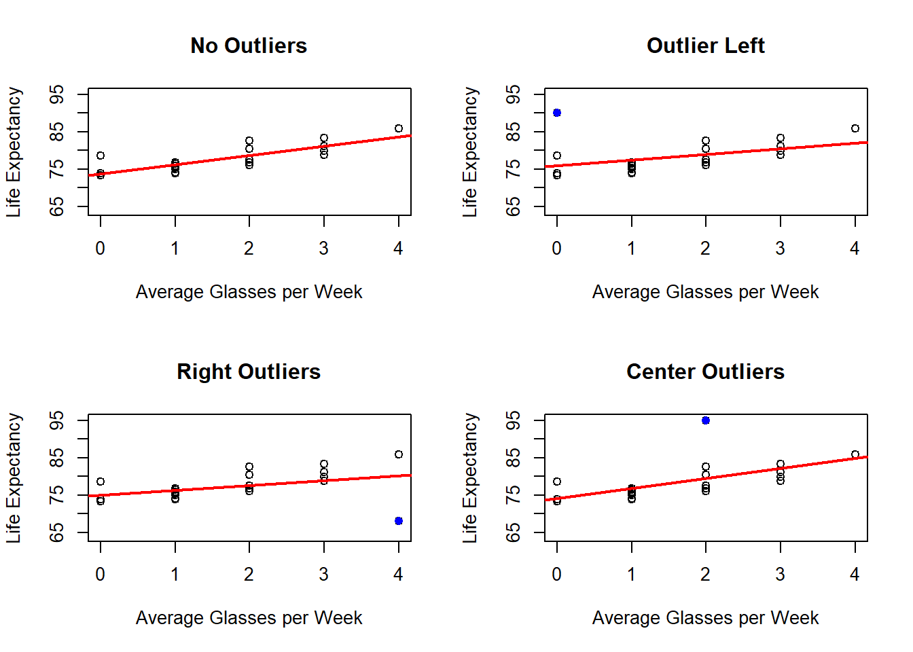
The presence of outliers, will also be more clear when looking at the residuals.x <- dat$Glasses
y <- dat$Years
ymin <- min(outRegNoo$residuals, outRegLef$residuals, outRegRig$residuals, outRegCen$residuals)
ymax <- max(outRegNoo$residuals, outRegLef$residuals, outRegRig$residuals, outRegCen$residuals)
xmin <- min(x)
xmax <- max(x)
par(mfrow = c(2, 2))
plot(x = dat$Glasses,
y = outRegNoo$residuals,
ylim = c(ymin, ymax),
xlim = c(xmin, xmax),
xlab = "Average Glasses per Week",
ylab = "Residuals",
main = "No Outliers",
pch = 16)
abline(h = 0,
lwd = 2)
# Outlier on the left side
x[21] <- 0
y[21] <- 90
plot(x = x,
y = outRegLef$residuals,
ylim = c(ymin, ymax),
xlim = c(xmin, xmax),
xlab = "Average Glasses per Week",
ylab = "Residuals",
main = "Left Outlier",
pch = 16)
abline(h = 0,
lwd = 2)
# Outlier on the right side
# Adds Observation
x[21] <- 4
y[21] <- 68
plot(x = x,
y = outRegRig$residuals,
ylim = c(ymin, ymax),
xlim = c(xmin, xmax),
xlab = "Average Glasses per Week",
ylab = "Residuals",
main = "Right Outlier",
pch = 16)
abline(h = 0,
lwd = 2)
# Outlier on the center
# Adds Observation
x[21] <- 2
y[21] <- 95
plot(x = x,
y = outRegCen$residuals,
ylim = c(ymin, ymax),
xlim = c(xmin, xmax),
xlab = "Average Glasses per Week",
ylab = "Residuals",
main = "Center Outlier",
pch = 16)
abline(h = 0,
lwd = 2)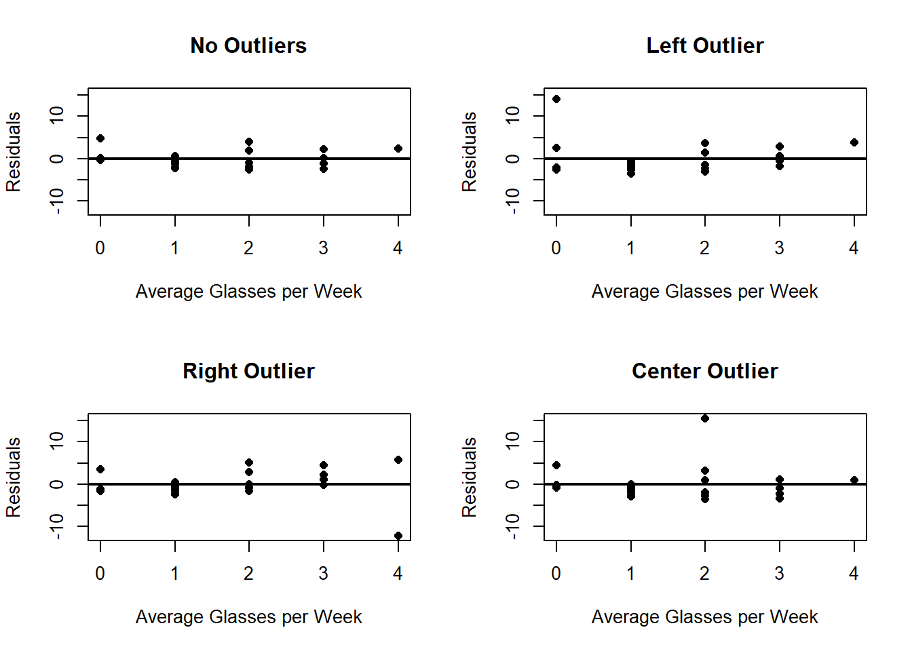
And we can also see how the \(R^2\) changes:##
## Call:
## lm(formula = y ~ x)
##
## Residuals:
## Min 1Q Median 3Q Max
## -2.6443 -1.4398 -0.3390 0.9071 4.8057
##
## Coefficients:
## Estimate Std. Error t value Pr(>|t|)
## (Intercept) 73.7154 0.8674 84.988 < 2e-16 ***
## x 2.4686 0.4364 5.656 2.29e-05 ***
## ---
## Signif. codes: 0 '***' 0.001 '**' 0.01 '*' 0.05 '.' 0.1 ' ' 1
##
## Residual standard error: 2.162 on 18 degrees of freedom
## Multiple R-squared: 0.64, Adjusted R-squared: 0.62
## F-statistic: 32 on 1 and 18 DF, p-value: 2.295e-05##
## Call:
## lm(formula = y ~ x)
##
## Residuals:
## Min 1Q Median 3Q Max
## -3.550 -2.296 -1.413 1.440 14.028
##
## Coefficients:
## Estimate Std. Error t value Pr(>|t|)
## (Intercept) 75.9724 1.5101 50.31 <2e-16 ***
## x 1.5258 0.7786 1.96 0.0649 .
## ---
## Signif. codes: 0 '***' 0.001 '**' 0.01 '*' 0.05 '.' 0.1 ' ' 1
##
## Residual standard error: 4.056 on 19 degrees of freedom
## Multiple R-squared: 0.1682, Adjusted R-squared: 0.1244
## F-statistic: 3.841 on 1 and 19 DF, p-value: 0.06486##
## Call:
## lm(formula = y ~ x)
##
## Residuals:
## Min 1Q Median 3Q Max
## -12.228 -1.428 -0.211 2.283 5.654
##
## Coefficients:
## Estimate Std. Error t value Pr(>|t|)
## (Intercept) 75.0353 1.4815 50.648 <2e-16 ***
## x 1.2981 0.6965 1.864 0.0779 .
## ---
## Signif. codes: 0 '***' 0.001 '**' 0.01 '*' 0.05 '.' 0.1 ' ' 1
##
## Residual standard error: 3.803 on 19 degrees of freedom
## Multiple R-squared: 0.1545, Adjusted R-squared: 0.11
## F-statistic: 3.473 on 1 and 19 DF, p-value: 0.0779##
## Call:
## lm(formula = y ~ x)
##
## Residuals:
## Min 1Q Median 3Q Max
## -3.4964 -2.2377 -0.9105 0.9596 15.4953
##
## Coefficients:
## Estimate Std. Error t value Pr(>|t|)
## (Intercept) 74.1257 1.6870 43.939 < 2e-16 ***
## x 2.6895 0.8486 3.169 0.00505 **
## ---
## Signif. codes: 0 '***' 0.001 '**' 0.01 '*' 0.05 '.' 0.1 ' ' 1
##
## Residual standard error: 4.214 on 19 degrees of freedom
## Multiple R-squared: 0.3459, Adjusted R-squared: 0.3114
## F-statistic: 10.05 on 1 and 19 DF, p-value: 0.005048Observations with explanatory-variable values far from the center of the observed \(x\) values can have greater potential to change the fitted line. This phenomenon will be studied later through the concept of leverage.
4.7.4 Variables Ommitted
When analyzing the residuals from a regression model, one of the key assumptions is that there should be no systematic pattern or structure in the residual plots. If residuals show no systematic pattern against the explanatory variable, there may be no obvious remaining structure associated with that variable. However, residuals may still contain systematic structure associated with other variables that were not included in the model.
However, in practice, the absence of an apparent pattern in the residuals may be misleading if some relevant variables have been omitted from the model. Omission of a relevant variable can leave systematic patterns in the residuals and can change the fitted relationship obtained from the reduced model.
To illustrate this concept, consider the example of analyzing children’s heights. Suppose the initial model predicts height based solely on age. When you examine the residuals, they might seem to lack any obvious pattern (beyond heteroscedasticity), suggesting a reasonable fit. Yet, if the data set also includes the sex of the children as an additional variable, and if height differs systematically between the groups defined by sex, then ignoring sex in the model can cause a pattern to emerge in the residuals when they are grouped or compared by sex.
dat <- read.csv("Height Data.csv")
# Fits linear Model
outReg <- lm(dat$Height ~ dat$Age)
# Plots residuals for each sex
ymin <- min(outReg$residuals)
ymax <- max(outReg$residuals)
par(mfrow=c(1, 2))
plot(x = dat$Age[dat$Sex == 1],
y = outReg$residuals[dat$Sex == 1],
ylim = c(ymin, ymax),
xlab = "Age",
ylab = "Residuals",
main = "Males",
pch = 16)
abline(h = 0,
lwd = 2)
plot(x = dat$Age[dat$Sex == 0],
y = outReg$residuals[dat$Sex == 0],
ylim = c(ymin, ymax),
xlab = "Age",
ylab = "Residuals",
main = "Females",
pch = 16)
abline(h = 0,
lwd = 2)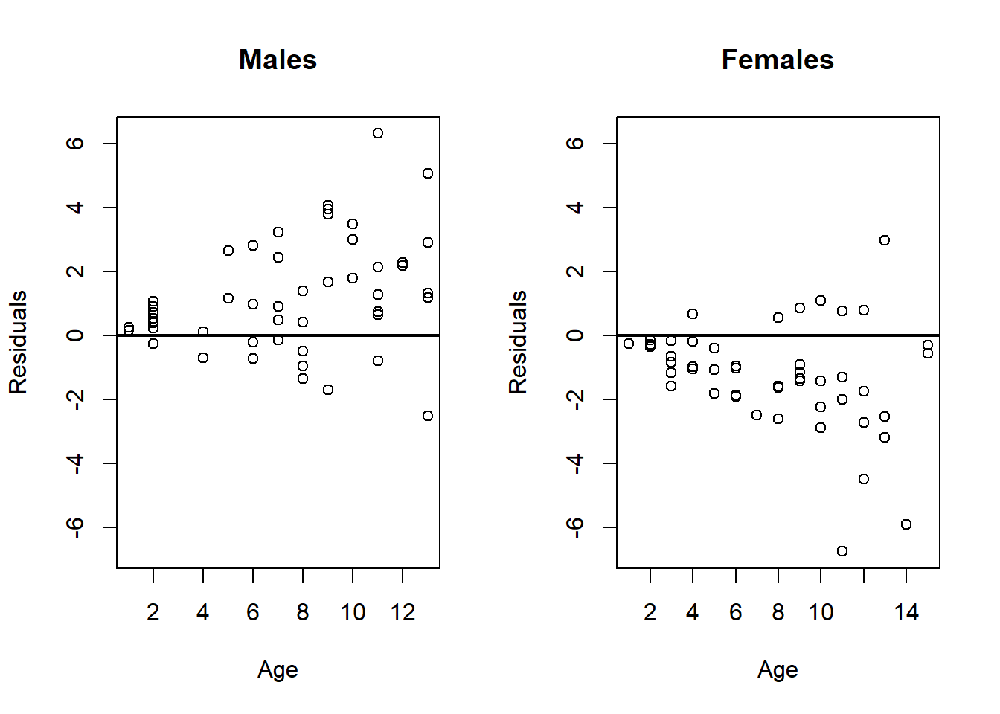
Specifically, when residuals are plotted separately for boys and girls, a clear pattern may appear: residuals for boys tend to be systematically higher or lower than those for girls. This indicates that sex is an important variable that was omitted from the model. Failing to include such relevant variables can lead to biased estimates of the relationship between the predictor (age) and the response (height), and potentially misleading inferences.
This example underscores the importance of considering all relevant variables when building a regression model. Omitting an important variable—such as sex in this case—can result in patterns in the residuals that reveal the model’s inadequacy. These patterns suggest the model is misspecified and that including additional, relevant predictors could significantly improve its accuracy and interpretability.
In practice, examining residuals against other variables, not just the predictor, provides crucial diagnostic information. Detecting such patterns alerts analysts to possible omitted variables, prompting further investigation, model refinement, and ultimately, more valid and reliable conclusions.
4.8 Cross-Validation
So far, we have evaluated fitted regression models using quantities such as \(R^2\) and residual plots. These tools describe how well a model fits the observations that were used to estimate its coefficients. However, a model that fits the observed data well does not necessarily predict new observations well.
To evaluate predictive performance, we need to assess the model using observations that were not used when estimating its coefficients. This general process is called model validation.
A simple approach is to divide the data into two parts:
- Training set: observations used to estimate the regression model.
- Validation set: observations not used during estimation and instead used to evaluate the predictive performance of the fitted model.
A third set, called a test set, may also be kept separate. The validation data can be used repeatedly when comparing models or choosing transformations, while the test data should ideally be used only after the final model has been selected.
A single separation of the observations into training and validation sets is usually called the holdout method. In contrast, cross-validation repeatedly changes which observations are used for training and validation so that predictive performance can be evaluated across different subsets of the data.
4.8.1 Validation Error
Suppose a validation set contains observations indexed by \(\mathcal{V}\). After estimating the model using only the training observations, let \(\hat{y}_i\) denote the prediction for a validation observation \(i\in\mathcal{V}\).
One possible measure of predictive performance is the Mean Squared Error (MSE):
\[ MSE_{\mathcal{V}} = \frac{1}{|\mathcal{V}|} \sum_{i\in\mathcal{V}} (y_i-\hat{y}_i)^2. \]
A smaller validation MSE indicates that, on average, the fitted model produces predictions closer to the observed responses for observations that were not used to estimate the model.
The important distinction is that the residual sum of squares measures errors on observations used to fit the model, while validation error measures prediction errors on observations that were not used in the fitting process.
4.8.2 Holdout Validation
The holdout method randomly separates the observations into a training set and a validation set. The model is estimated using the training observations and then used to predict the responses in the validation set.
This method is simple and computationally inexpensive. However, the estimated predictive performance can depend substantially on the particular observations assigned to the training and validation sets.
Cross-validation reduces this dependence by repeating the training-validation process using several different subsets of observations.
4.8.3 K-Fold Cross-Validation
In \(k\)-fold cross-validation, the observations are divided into \(k\) approximately equal-sized groups, called folds:
\[ \mathcal{F}_1,\ldots,\mathcal{F}_k. \]
For each fold \(j\):
- The observations in \(\mathcal{F}_j\) are treated as the validation set.
- The remaining \(k-1\) folds are used as the training set.
- The model is estimated using the training observations.
- Predictions are obtained for the observations in \(\mathcal{F}_j\).
- The prediction errors on the validation fold are recorded.
Therefore, every observation is used for validation exactly once and for training in the remaining \(k-1\) fits.
If \(\hat{y}_i^{(-j)}\) denotes the prediction for observation \(i\in\mathcal{F}_j\) obtained from the model fitted without fold \(j\), then the Mean Squared Error for fold \(j\) is
\[ MSE_j = \frac{1}{|\mathcal{F}_j|} \sum_{i\in\mathcal{F}_j} \left(y_i-\hat{y}_i^{(-j)}\right)^2. \]
The overall \(k\)-fold cross-validation error is
\[ CV_{\text{MSE}} = \frac{1}{n} \sum_{j=1}^k \sum_{i\in\mathcal{F}_j} \left(y_i-\hat{y}_i^{(-j)}\right)^2. \]
When all folds have the same size, this is equivalent to averaging the \(k\) fold-specific MSE values.
Common choices are \(k=5\) and \(k=10\). These choices allow most observations to be used for estimating the model while requiring substantially fewer model fits than procedures that leave out observations one at a time.
4.8.4 Other Cross-Validation Procedures
Two closely related variations are also useful:
Leave-One-Out Cross-Validation (LOOCV): Each observation forms its own validation set. The model is therefore estimated \(n\) times, each time using the remaining \(n-1\) observations. LOOCV uses almost all available observations for training in each fit, but it can require substantially more computation than \(k\)-fold cross-validation.
Repeated K-Fold Cross-Validation: The complete \(k\)-fold procedure is repeated several times using different random divisions into folds. This makes it possible to examine how sensitive the estimated predictive performance is to the particular partition of the observations.
In this course, we will primarily use \(k\)-fold cross-validation because it provides a simple and computationally practical way to compare the predictive performance of different regression models.
We now illustrate \(k\)-fold cross-validation using the Burger Data. In particular, we will compare models involving transformations of the explanatory variable, the response variable, or both.
### Cross Validation Example
set.seed(2026)
# Read Data
dat <- read.csv(file = "Burger Data.csv")
# Saves Variables
x <- dat$Price
y <- dat$Burgers
# Number of Observations
n <- length(y)
# Number of Folds
numFol <- 10
# Fold Size
sizFol <- round(n / numFol)
# List Containing the Fold indices
fol <- list()
# Select Fold Indices
# Initialization
ind <- 1:n
for(i in 1:numFol){
# Computes the remaining number of indices
numInd <- length(ind)
# Randomly selects indices from the remaining indices
indFol <- sample(x = 1:length(ind), size = sizFol, replace = FALSE)
# Saves the indices to the list of Fold Indices
fol[[i]] <- ind[indFol]
# Removes the indices from the indices vector
ind <- ind[- indFol]
}
# Models to try
X <- cbind(x, log(x), x, log(x))
Y <- cbind(y, y, log(y), log(y))
# Number of Models to compare
numMod <- dim(Y)[2]
# Saves the validation metric for each model and each fold
matMet <- matrix(data = NA, nrow = numFol, ncol = numMod)
par(mfrow=c(2, 2))
# Loops through the models
for(k in 1:numMod){
yMod <- Y[, k]
xMod <- X[, k]
# Plots Transformed Data (All)
if(k == 1){
plot(x = xMod,
y = yMod,
xlab = "Price ($)",
ylab = "Burgers",
main = paste0("Model ", k),
pch = 16)
} else if(k == 2) {
plot(x = xMod,
y = yMod,
xlab = "log(Price) ($)",
ylab = "Burgers",
main = paste0("Model ", k),
pch = 16)
} else if(k == 3){
plot(x = xMod,
y = yMod,
xlab = "Price ($)",
ylab = "log(Burgers)",
main = paste0("Model ", k),
pch = 16)
} else {
plot(x = xMod,
y = yMod,
xlab = "log(Price) ($)",
ylab = "log(Burgers)",
main = paste0("Model ", k),
pch = 16)
}
# Plots Regression Line (All)
outReg <- lm(yMod ~ xMod)
abline(a = outReg$coefficients[1],
b = outReg$coefficients[2],
col = 'red',
lwd = 2)
metFol <- numeric(length = numFol)
# Loops through the folds
for(i in 1:numFol){
# At Each Fold do Linear Regression without the test set
outReg <- lm(yMod[-fol[[i]]] ~ xMod[-fol[[i]]])
# Evaluate Out of Sample
yHatOut <- outReg$coefficients[1] + outReg$coefficients[2] * xMod[fol[[i]]]
if(k >= 3 ){
metEva <- mean((exp(yMod[fol[[i]]]) - exp(yHatOut))^2)
} else {
metEva <- mean((yMod[fol[[i]]] - yHatOut)^2)
}
metFol[i] <- metEva
}
matMet[, k] <- metFol
}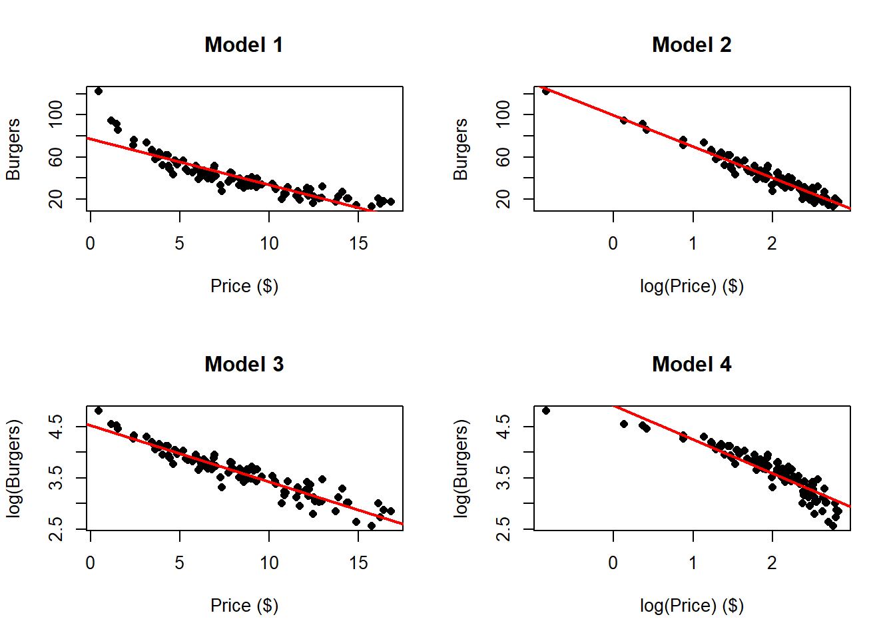
# Box plot of the MSE
par(mfrow=c(1, 1))
boxplot(matMet, outline = FALSE, xaxt = "n", xlab = "Models", ylab = "MSE")
axis(side = 1, at = c(1, 2, 3, 4), labels = c("y~x", "y~log(x)", "log(y)~x", "log(y)~log(x)"))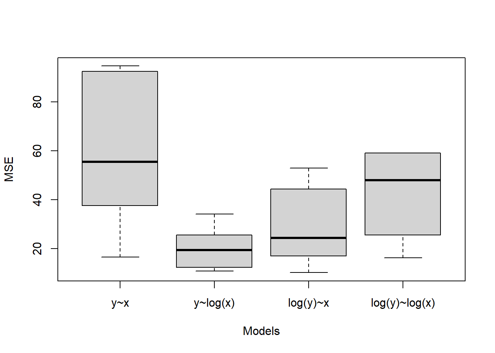
# Displays the Results of Cross-Validation
tab <- data.frame(colMeans(matMet))
tab <- cbind(c("Model 1", "Model 2", "Model 3", "Model 4"), tab)
tab <- cbind(tab, apply(X = matMet, MARGIN = 2, FUN = sd))
colnames(tab) <- c("Model", "Mean", "SD")
knitr::kable(tab, digits = 2)| Model | Mean | SD |
|---|---|---|
| Model 1 | 78.61 | 74.83 |
| Model 2 | 20.15 | 8.26 |
| Model 3 | 39.39 | 41.47 |
| Model 4 | 331.60 | 890.85 |
When performing cross-validation, it is essential to calculate error metrics in the original units of the response variable before any transformation. Transformations like scaling or logging change the scale of the data, which can make errors appear smaller or larger in the transformed units and lead to misleading comparisons.
For example, compare the scale of the response in Models 3 and 4 with those in Models 1 and 2. Since the range of values after transforming in Models 3 and 4 is smaller, the squared errors tend to be smaller simply because of this change, making it unfair to compare these errors to those from Models 1 and 2. Similarly, if income is measured in dollars and then log-transformed, errors in the transformed scale do not directly reflect dollar amounts. To evaluate model performance correctly, predictions should be transformed back to the original units before computing errors or other accuracy metrics.
When models are intended to predict the same original response, compare them using the same evaluation scale and metric to ensure that results are meaningful and comparable in real-world terms. Keep the transformation parameters consistent for new data, and report errors in the same units for clear, interpretable results.
4.8.5 Summary
\[ \boxed{ \begin{array}{lll} R^2 &:& \text{How well does the model fit the observed training data?}\\[1mm] \text{Residual analysis} &:& \text{What structure or problems remain after fitting?}\\[1mm] \text{Cross-validation} &:& \text{How well does the fitted procedure predict held-out observations?} \end{array} } \]
4.9 Weighted Least Squares
Weighted Least Squares is a generalization of Ordinary Least Squares designed to handle situations in which the assumption of constant error variance is violated. When the variability of the errors differs across observations—i.e., when heteroscedasticity is present—OLS estimators remain unbiased but are no longer the most efficient linear estimators. WLS addresses this inefficiency by incorporating information about the relative precision of individual observations into the fitting procedure.
Motivation and intuition
- Heteroscedasticity means some observations are inherently more variable than others. Treating all observations as equally informative gives undue influence to noisy points and reduces overall estimation precision.
- WLS assigns each observation a weight that reflects its reliability: observations with smaller error variance receive larger weight, and those with larger error variance receive smaller weight. In effect, the method downweights noisy observations and upweights precise ones, producing estimates that place greater trust in the most informative data.
- In the ideal case, weights are chosen to be inversely related to the true error variances; this makes the weighted estimator the most efficient among linear unbiased estimators under the model.
In a simple linear regression model with one explanatory variable, OLS minimizes the sum of squared residuals:
\[ \min \sum_{i=1}^{n} (y_i - \hat{y}_i)^2 = \min \sum_{i=1}^{n} (y_i - \beta_0 - \beta_1 x_i)^2 \]
Weighted Least Squares (WLS) corrects for heteroscedasticity by minimizing the weighted sum of squared residuals: \[ \min \sum_{i=1}^{n} w_i (y_i - \hat{y}_i)^2 = \min \sum_{i=1}^{n} w_i (y_i - \beta_0 - \beta_1 x_i)^2 \]
Proposition 4.19 (Weighted Least Squares Estimators) The solution to the Weithed Least Squares problem: \[ \min_{\beta_0,\beta_1} \sum_{i=1}^{n} w_i (y_i - \beta_0 - \beta_1 x_i)^2 \] is given by: \[\hat{\beta}_1^w = \frac{\sum_{i=1}^{n} w_i x_i y_i - \frac{\sum_{i=1}^{n} w_i x_i \sum_{i=1}^{n} w_i y_i}{\sum_{i=1}^{n} w_i}}{\sum_{i=1}^{n} w_i x_i^2 - \frac{\left( \sum_{i=1}^{n} w_i x_i \right)^2}{\sum_{i=1}^{n} w_i}},\]
\[\hat{\beta}_0^w = \frac{\sum_{i=1}^{n} w_i y_i - \beta_1^w \sum_{i=1}^{n} w_i x_i}{\sum_{i=1}^{n} w_i}.\]
Proof
Proof. First define the weighted residual sum of squares, the objective function, as: \[Q_w(\beta_0, \beta_1) = \sum_{i=1}^{n} w_i (y_i - \beta_0 - \beta_1 x_i)^2\] We aim to minimize \(Q(\beta_0, \beta_1)\) with respect to \(\beta_0\) and \(\beta_1\). We will do so by finding its critical points. \[\begin{align*} \frac{\partial Q_w}{\partial \beta_0} &= \frac{\partial}{\partial \beta_0} \sum_{i=1}^{n} w_i (y_i - \beta_0 - \beta_1 x_i)^2 & \text{def. } Q_w \\ &= \sum_{i=1}^{n} \frac{\partial}{\partial \beta_0} w_i (y_i - \beta_0 - \beta_1 x_i)^2 & \text{lin. dev.} \\ &= \sum_{i=1}^{n} -2 w_i (y_i - \beta_0 - \beta_1 x_i) & \\ &= \sum_{i=1}^{n} -2 \left( w_i y_i - w_i \beta_0 - w_i \beta_1 x_i \right) & \\ &= -2 \sum_{i=1}^{n} w_i y_i + 2 \beta_0 \sum_{i=1}^{n} w_i + 2 \beta_1 \sum_{i=1}^{n} w_i x_i & \text{lin. sum} \\ &= -2 \left( \sum_{i=1}^{n} w_i y_i - \beta_0 \sum_{i=1}^{n} w_i - \beta_1 \sum_{i=1}^{n} w_i x_i \right) & \\ \end{align*}\] Similarly \[\begin{align*} \frac{\partial Q_w}{\partial \beta_1} &= \frac{\partial}{\partial \beta_1} \sum_{i=1}^{n} w_i (y_i - \beta_0 - \beta_1 x_i)^2 & \text{def. } Q_w \\ &= \sum_{i=1}^{n} \frac{\partial}{\partial \beta_1} w_i (y_i - \beta_0 - \beta_1 x_i)^2 & \text{lin. dev.} \\ &= \sum_{i=1}^{n} -2 w_i (y_i - \beta_0 - \beta_1 x_i) x_i & \\ &= \sum_{i=1}^{n} -2 \left( w_i y_i x_i - \beta_0 w_i x_i - w_i \beta_1 x_i^2 \right) & \\ &= -2 \sum_{i=1}^{n} w_i y_i x_i + 2 \beta_0 \sum_{i=1}^{n} w_i x_i + 2 \beta_1 \sum_{i=1}^{n} w_i x_i^2 & \text{lin. sum} \\ &= -2 \left( \sum_{i=1}^{n} w_i y_i x_i - \beta_0 \sum_{i=1}^{n} w_i x_i - \beta_1 \sum_{i=1}^{n} w_i x_i^2 \right) & \\ \end{align*}\] Making them equal to zero, we have:
\[\begin{align*} -2 & \left( \sum_{i=1}^{n} w_i y_i - \beta_0 \sum_{i=1}^{n} w_i - \beta_1 \sum_{i=1}^{n} w_i x_i \right) = 0 \\ & \implies \sum_{i=1}^{n} w_i y_i = \beta_0 \sum_{i=1}^{n} w_i + \beta_1 \sum_{i=1}^{n} w_i x_i \tag{1} \end{align*}\]
and
\[\begin{align*} -2 & \left( \sum_{i=1}^{n} w_i y_i x_i - \beta_0 \sum_{i=1}^{n} w_i x_i - \beta_1 \sum_{i=1}^{n} w_i x_i^2 \right) = 0 \\ & \implies \sum_{i=1}^{n} w_i y_i x_i = \beta_0 \sum_{i=1}^{n} w_i x_i + \beta_1 \sum_{i=1}^{n} w_i x_i^2 \tag{2} \end{align*}\]
Now we solve the system of two linear equations. First, we solve for \(\beta_1\) by multiplying equation (1) by \(\frac{\sum_{i=1}^{n} w_i x_i}{\sum_{i=1}^n w_i}\) and subtract it from equation (2) to eliminate \(\beta_0\):
\[\begin{align*} \sum_{i=1}^{n} & w_i y_i = \beta_0 \sum_{i=1}^{n} w_i + \beta_1 \sum_{i=1}^{n} w_i x_i & \\ &\implies \frac{\sum_{i=1}^{n} w_i x_i}{\sum_{i=1}^n w_i} \sum_{i=1}^{n} w_i y_i = \frac{\sum_{i=1}^{n} w_i x_i}{\sum_{i=1}^n w_i} \left( \beta_0 \sum_{i=1}^{n} w_i + \beta_1 \sum_{i=1}^{n} w_i x_i \right) & \\ &\implies \frac{\sum_{i=1}^{n} w_i x_i \sum_{i=1}^{n} w_i y_i}{\sum_{i=1}^n w_i} = \beta_0 \sum_{i=1}^{n} w_i x_i + \beta_1 \frac{\left(\sum_{i=1}^{n} w_i x_i \right)^2}{\sum_{i=1}^n w_i} & \\ &\implies \frac{\sum_{i=1}^{n} w_i x_i \sum_{i=1}^{n} w_i y_i}{\sum_{i=1}^n w_i} - \sum_{i=1}^{n} w_i y_i x_i = \beta_1 \frac{\left(\sum_{i=1}^{n} w_i x_i \right)^2}{\sum_{i=1}^n w_i} - \beta_1 \sum_{i=1}^{n} w_i x_i^2 & \text{sub. } (2) \\ &\implies \beta_1 \left( \sum_{i=1}^{n} w_i x_i^2 - \frac{\left( \sum_{i=1}^{n} w_i x_i \right)^2}{\sum_{i=1}^{n} w_i} \right) = \sum_{i=1}^{n} w_i y_i x_i - \frac{\sum_{i=1}^{n} w_i x_i \sum_{i=1}^{n} w_i y_i}{\sum_{i=1}^{n} w_i} & \\ &\implies \beta_1 = \frac{\sum_{i=1}^{n} w_i x_i y_i - \frac{\sum_{i=1}^{n} w_i x_i \sum_{i=1}^{n} w_i y_i}{\sum_{i=1}^{n} w_i}}{\sum_{i=1}^{n} w_i x_i^2 - \frac{\left( \sum_{i=1}^{n} w_i x_i \right)^2}{\sum_{i=1}^{n} w_i}} & \\ \end{align*}\] Then the weighted estimators for \(\beta_0\) and \(\beta_1\) are: \[\hat{\beta}_1^w = \frac{\sum_{i=1}^{n} w_i x_i y_i - \frac{\sum_{i=1}^{n} w_i x_i \sum_{i=1}^{n} w_i y_i}{\sum_{i=1}^{n} w_i}}{\sum_{i=1}^{n} w_i x_i^2 - \frac{\left( \sum_{i=1}^{n} w_i x_i \right)^2}{\sum_{i=1}^{n} w_i}},\]
\[\hat{\beta}_0^w = \frac{\sum_{i=1}^{n} w_i y_i - \beta_1 \sum_{i=1}^{n} w_i x_i}{\sum_{i=1}^{n} w_i}.\]
How weights are determined?
- When the error variances are known a priori, weights can be set directly in inverse proportion to those variances.
- In practice, true variances are usually unknown. Weights are therefore often based on estimates or proxies for the variances—obtained from repeated measurements, external information, or preliminary residual analysis. Iterative procedures can be used to refine weights if needed.
- Choosing appropriate weights is crucial: good weights improve efficiency and inference, whereas poorly chosen weights can degrade performance.
Implementation and relationship to OLS:
- WLS reduces to OLS when all weights are equal; thus OLS is a special case of WLS.
- Implementation typically entails reweighting observations and solving the weighted normal equations; many statistical software packages provide direct WLS fitting routines.
- It is important to record and use the same weights for prediction and validation to maintain consistency.
Diagnostics and when to consider WLS:
- Residual plots that show changing spread with the predictor or fitted values suggest heteroscedasticity and motivate consideration of WLS.
- Even when heteroscedasticity is modest, WLS can improve precision; where heteroscedasticity is severe, it can substantially alter conclusions.
Limitations and cautions:
- Weight specification is critical. If weights do not reflect the actual variance structure, WLS may not improve and can even worsen inference.
- When reliable information about the variance structure is unavailable, robust (heteroscedasticity‑consistent) standard errors or other methods may be preferable to poorly specified weighting.
- WLS addresses nonconstant variance but does not by itself resolve other model problems such as nonlinearity, omitted variables, or influential outliers.
Summary
Weighted Least Squares adapts the least‑squares framework to give more influence to precise observations and less to noisy ones, restoring efficiency when error variances vary across observations. The guiding principle is straightforward: lower variance implies higher weight, and higher variance implies lower weight. Effective use of WLS depends on sensible choices or estimates of the weights and appropriate calculation of standard errors for valid inference.
4.10 Model in Matrix Form
We can specify the same model as in Model, in matrix form as follows:
\[\mathbf{y}= \mathbf{X}\boldsymbol{\beta}+ \mathbf{e}\] where:
- \(\mathbf{y}={y_1,\ldots,y_n}'\)
- \(\mathbf{e}={e_1,\ldots,e_n}'\)
- \(\boldsymbol{\beta}={\beta_0,\beta_1}'\)
- \(\mathbf{X}=\begin{bmatrix}𝟙 & \mathbf{x}\end{bmatrix}\)
- \(𝟙={1,\ldots,1}'\) (1 \(n\)-times).
In this way we can re-write our minimization problem as follows:
\[ \min_{\boldsymbol{\beta}} \sum_{i=1}^{n} (y_i - \hat{y}_i)^2 = \min_{\boldsymbol{\beta}} \sum_{i=1}^{n} (y_i - \beta_0 - \beta_1 x_i)^2 = \min_{\boldsymbol{\beta}} \sum_{i=1}^{n} (\mathbf{y}- \mathbf{X}\boldsymbol{\beta})'(\mathbf{y}- \mathbf{X}\boldsymbol{\beta})\] equivalent to: \[\min_{\boldsymbol{\beta}} Q(\boldsymbol{\beta}) = \left( \mathbf{y}'\mathbf{y}- \mathbf{y}'\mathbf{X}\boldsymbol{\beta}- \boldsymbol{\beta}'\mathbf{X}'\mathbf{y}+ \boldsymbol{\beta}'\mathbf{X}'\mathbf{X}\boldsymbol{\beta}\right)\]
Proposition 4.20 The solution to the Least Squres minimization problem in matrix form is given by: \[\hat{\boldsymbol{\beta}} = \left(\mathbf{X}' \mathbf{X}\right)^{-1}\mathbf{X}'\mathbf{y}\]
Proof
Proof. The procedure to find the estimators is very similar, working with the gradient instead of the partial derivatives: \[\nabla_\beta Q = \mathbf{0} \] Now \[\nabla_\beta Q = -\mathbf{X}'\mathbf{y}-\mathbf{X}'\mathbf{y}+ 2 \mathbf{X}' \mathbf{X}\boldsymbol{\beta}\] Then, making the gradient equal to zero, we have: \[\begin{align*} \nabla_\beta Q &= 0 & \\ & \implies -\mathbf{X}'\mathbf{y}-\mathbf{X}'\mathbf{y}+ 2 \mathbf{X}' \mathbf{X}\boldsymbol{\beta}= 0 & \\ & \implies 2 \mathbf{X}' \mathbf{X}\boldsymbol{\beta}= 2 \mathbf{X}'\mathbf{y} & \\ & \implies \mathbf{X}' \mathbf{X}\boldsymbol{\beta}= \mathbf{X}'\mathbf{y} & \\ & \implies \boldsymbol{\beta}= \left(\mathbf{X}' \mathbf{X}\right)^{-1}\mathbf{X}'\mathbf{y} \end{align*}\] Notice how we find the estimates much easier. It is also easy to show that a minimum is attained by computing the Hessian Matrix of \(Q\) The Hessian matrix is given by: \[H_Q = 2 \mathbf{X}' \mathbf{X}\] Notice that \[ \mathbf{X}' \mathbf{X}\] is positive-definite if \(\mathbf{x}\) is not a constant vector. This shows that the solution is indeed a minimum.
Proposition 4.21 The solution to the Least Squres minimization problem in matrix form is given by is equivalent to the solution in of the model expressed in scalar form.
Proof
Proof. We need to show that each of the components of \(\hat{\boldsymbol{\beta}} = (\hat{\beta}_0,\hat{\beta_1})\) are the same of the scalar solution. To do so, we need to go through the matrix computations. \[\begin{align*} \mathbf{X} &= \begin{bmatrix} 1 & x_1 \\ 1 & x_2 \\ \vdots & \vdots \\ 1 & x_n \end{bmatrix} \\ &= \begin{bmatrix} 𝟙 & \mathbf{x} \end{bmatrix} \in \mathbb{R}^{n \times 2} \end{align*}\]
Then we have that:
\[\begin{align*} \mathbf{X}' &= \begin{bmatrix} 𝟙' \\ \mathbf{x}' \end{bmatrix} \in \mathbb{R}^{2 \times n} \end{align*}\]
Multiplying \(\mathbf{X}'\) by \(\mathbf{X}\), we have:
\[\begin{align*} \mathbf{X}' \mathbf{X} &= \begin{bmatrix} 𝟙' \\ \mathbf{x}' \end{bmatrix} \begin{bmatrix} 𝟙 & \mathbf{x} \end{bmatrix} \\ &= \begin{bmatrix} 𝟙'𝟙 & 𝟙'\mathbf{x}\\ \mathbf{x}'𝟙& \mathbf{x}'\mathbf{x} \end{bmatrix} \\ &= \begin{bmatrix} n & \sum_{i=1}^n x_i \\ \sum_{i=1}^n x_i & \sum_{i=1}^n x_i^2 \end{bmatrix} \\ &= \begin{bmatrix} n & n\bar{x} \\ n\bar{x} & \sum_{i=1}^n x_i^2 \end{bmatrix} \end{align*}\]
Similarly, we have that:
\[\begin{align*} \mathbf{X}' \mathbf{y} &= \begin{bmatrix} 𝟙' \\ \mathbf{x}' \end{bmatrix} \mathbf{y}\\ &= \begin{bmatrix} 𝟙'\mathbf{y}\\ \mathbf{x}'\mathbf{y} \end{bmatrix} \\ &= \begin{bmatrix} \sum_{i=1}^n y_i \\ \sum_{i=1}^n x_i y_i \end{bmatrix} \\ &= \begin{bmatrix} n \bar{y} \\ \sum_{i=1}^n x_i y_i \end{bmatrix} \\ \end{align*}\]
To compute the inverse of \(\mathbf{X}'\mathbf{X}\) we use the Formula for the Inverse of a 2 by 2 Matrix:
\[ (\mathbf{X}' \mathbf{X})^{-1} = \frac{1}{n \sum_{i=1}^n x_i^2 - n^2 \left( \bar{x} \right)^2} \begin{bmatrix} \sum_{i=1}^n x_i^2 & - n \bar{x} \\ - n \bar{x} & n \end{bmatrix} \]
Combining all of this operations we have that:
\[\begin{align*} \hat{\boldsymbol{\beta}} &= (\mathbf{X}' \mathbf{X})^{-1} \mathbf{X}^\top \mathbf{y} & \\ &= \frac{1}{n \sum_{i=1}^n x_i^2 - n^2 \left( \bar{x} \right)^2} \begin{bmatrix} \sum_{i=1}^n x_i^2 & - n \bar{x} \\ - n \bar{x} & n \end{bmatrix} \begin{bmatrix} n \bar{y} \\ \sum_{i=1}^n x_i y_i \end{bmatrix} & \\ &= \frac{1}{n \left( \sum_{i=1}^n x_i^2 - n \left( \bar{x} \right)^2 \right)} \begin{bmatrix} n \bar{y} \sum_{i=1}^n x_i^2 - n \bar{x} \sum_{i=1}^n x_i y_i \\ -n^2 \bar{y} \bar{x} + n \sum_{i=1}^n x_i y_i \end{bmatrix} & \\ &= \frac{1}{n(n-1)S_{xx}} \begin{bmatrix} n \left( \bar{y} \sum_{i=1}^n x_i^2 - \bar{x} \sum_{i=1}^n x_i y_i \right) \\ n \left( \sum_{i=1}^n x_i y_i - n \bar{y} \bar{x} \right) \end{bmatrix} & S{xx}=\frac{\sum_{i=1}^n x_i^2 - n \left( \bar{x} \right)^2}{n-1} \\ &= \frac{1}{n(n-1)S_{xx}} \begin{bmatrix} n \left( \bar{y} \sum_{i=1}^n x_i^2 - \bar{x} \sum_{i=1}^n x_i y_i \right) \\ n (n-1) S{xy} \end{bmatrix} & S{xy}=\frac{\sum_{i=1}^n x_iy_i - n \bar{x}\bar{y}}{n-1} \\ \end{align*}\]
Now, notice that: \[\begin{align*} \bar{y} \sum_{i=1}^n x_i^2 - \bar{x} \sum_{i=1}^n x_i y_i &= \bar{y} \sum_{i=1}^n x_i^2 -n \bar{y}\bar{x}^2 + n \bar{y}\bar{x}^2 - \bar{x} \sum_{i=1}^n x_i y_i & \text{adding 0} \\ &= \bar{y} \left(\sum_{i=1}^n x_i^2 -n \bar{x}^2 \right) + \bar{x}\left(n \bar{y}\bar{x} - \sum_{i=1}^n x_i y_i \right) & \\ &= \bar{y} (n-1)S_{xx} - \bar{x}(n-1)S_{yx} & S{xx}=\frac{\sum_{i=1}^n x_i^2 - n \left( \bar{x} \right)^2}{n-1}, S{xy}=\frac{\sum_{i=1}^n x_iy_i - n \bar{x}\bar{y}}{n-1} \\ &= (n-1)\left(\bar{y} S_{xx} - S_{yx} \bar{x} \right) & S{xx}=\frac{\sum_{i=1}^n x_i^2 - n \left( \bar{x} \right)^2}{n-1}, S{xy}=\frac{\sum_{i=1}^n x_iy_i - n \bar{x}\bar{y}}{n-1} \\ \end{align*}\] Then we have that: \[\begin{align*} \hat{\boldsymbol{\beta}} &= \frac{1}{n(n-1)S_{xx}} \begin{bmatrix} n (n-1)\left(\bar{y} S_{xx} - S_{yx} \bar{x} \right) \\ n (n-1) S{xy} \end{bmatrix} & \\ &= \begin{bmatrix} \frac{n (n-1)\left(\bar{y} S_{xx} - S_{yx} \bar{x} \right)}{n(n-1)S_{xx}} \\ \frac{n (n-1) S{xy}}{n(n-1)S_{xx}} \end{bmatrix} & \\ &= \begin{bmatrix} \frac{\left(\bar{y} S_{xx} - S_{yx} \bar{x} \right)}{S_{xx}} \\ \frac{S{xy}}{S_{xx}} \end{bmatrix} & \\ &= \begin{bmatrix} \frac{\bar{y} S_{xx}}{S_{xx}} - \frac{S_{yx} \bar{x}}{S_{xx}} \\ \hat{\beta}_1 \end{bmatrix} & \hat{\beta}_1 = \frac{S{xy}}{S_{xx}}\\ &= \begin{bmatrix} \bar{y} - \bar{x}\frac{S_{yx}}{S_{xx}} \\ \hat{\beta}_1 \end{bmatrix} & \\ &= \begin{bmatrix} \bar{y} - \bar{x}\hat{\beta}_1 \\ \hat{\beta}_1 \end{bmatrix} & \hat{\beta}_1 = \frac{S{xy}}{S_{xx}}\\ \end{align*}\]
4.10.1 Weighted Least Squares in Matrix Form
In a similar way we can solve the weighted least squares problem in matrix form by noticing that we can write the Weighted Least Squares function as follows:
\[Q_w = \sum_{i=1}^{n} w_i (y_i - \beta_0 - \beta_1 x_i)^2 = (\mathbf{y}- \mathbf{X}\boldsymbol{\beta})'\mathbf{W}(\mathbf{y}- \mathbf{X}\boldsymbol{\beta}) = \mathbf{y}'\mathbf{W}\mathbf{y}-\mathbf{y}'\mathbf{W}\mathbf{X}\boldsymbol{\beta}- \boldsymbol{\beta}'\mathbf{X}'\mathbf{W}\mathbf{y}+ \boldsymbol{\beta}'\mathbf{X}'\mathbf{W}\mathbf{X}\boldsymbol{\beta}\]
where, \(\mathbf{W}\) is a diagonal matrix with diagonal entries \(w_1,\ldots,w_n\). That is
\[\mathbf{W}= \left[\begin{matrix} w_1 & 0 & \ldots & 0 \\ 0 & w_2 & \ldots & 0 \\ 0 & 0 & \ldots & 0 \\ \vdots & \vdots & \ddots & \vdots \\ 0 & 0 & \ldots & w_n \end{matrix} \right]\]
Proposition 4.22 (Weighted Least Squares Estimators in Matrix Form) The solution to the Weithed Least Squares problem in matrix form: \[ \min_{\boldsymbol{\beta}} (\mathbf{y}- \mathbf{X}\boldsymbol{\beta})'\mathbf{W}(\mathbf{y}- \mathbf{X}\boldsymbol{\beta}) \] is given by: \[\hat{\boldsymbol{\beta}}^w = \left(\mathbf{X}'\mathbf{W}\mathbf{X}\right)^{-1}\mathbf{X}'\mathbf{W}\mathbf{y}\]
Proof
Proof. Note we can write the objective function as: \[Q_w = \mathbf{y}'\mathbf{W}\mathbf{y}-\mathbf{y}'\mathbf{W}\mathbf{X}\boldsymbol{\beta}- \boldsymbol{\beta}'\mathbf{X}'\mathbf{W}\mathbf{y}+ \boldsymbol{\beta}'\mathbf{X}'\mathbf{W}\mathbf{X}\boldsymbol{\beta}\] then computing the gradient we have that: \[\begin{align*} \nabla_\boldsymbol{\beta}Q_w &=\frac{d Q_w}{d \boldsymbol{\beta}} & \\ &= \frac{d}{d \boldsymbol{\beta}} \left[\mathbf{y}'\mathbf{W}\mathbf{y}-\mathbf{y}'\mathbf{W}\mathbf{X}\boldsymbol{\beta}- \boldsymbol{\beta}'\mathbf{X}'\mathbf{W}\mathbf{y}+ \boldsymbol{\beta}'\mathbf{X}'\mathbf{W}\mathbf{X}\boldsymbol{\beta}\right] & \\ &= \frac{d}{d \boldsymbol{\beta}} \mathbf{y}'\mathbf{W}\mathbf{y}- \frac{d}{d \boldsymbol{\beta}} \mathbf{y}'\mathbf{W}\mathbf{X}\boldsymbol{\beta}- \frac{d}{d \boldsymbol{\beta}} \boldsymbol{\beta}'\mathbf{X}'\mathbf{W}\mathbf{y}+ \frac{d}{d \boldsymbol{\beta}} \boldsymbol{\beta}'\mathbf{X}'\mathbf{W}\mathbf{X}\boldsymbol{\beta} & \text{lin. derivative} \\ &= 0 - \mathbf{X}'\mathbf{W}\mathbf{y}- \mathbf{X}'\mathbf{W}\mathbf{y}+ 2 \mathbf{X}'\mathbf{W}\mathbf{X}\boldsymbol{\beta} & \\ &= 2 \mathbf{X}'\mathbf{W}\mathbf{X}\boldsymbol{\beta}- 2 \mathbf{X}'\mathbf{W}\mathbf{y} & \\ \end{align*}\]
Then making the gradient equalt to \(0\), we have:
\[\begin{align*} \nabla_\boldsymbol{\beta}Q_w &= 0 & \\ &\implies 2 \mathbf{X}'\mathbf{W}\mathbf{X}\boldsymbol{\beta}- 2 \mathbf{X}'\mathbf{W}\mathbf{y} & \\ &\implies \mathbf{X}'\mathbf{W}\mathbf{X}\boldsymbol{\beta}= \mathbf{X}'\mathbf{W}\mathbf{y} & \\ &\implies \boldsymbol{\beta}= \left(\mathbf{X}'\mathbf{W}\mathbf{X}\right)^{-1} \mathbf{X}'\mathbf{W}\mathbf{y} & \\ \end{align*}\]
And the Hessian Matrix is given by:
\[H_{Q_w} = 2 \mathbf{X}'\mathbf{W}\mathbf{X}\]
which is positive-definite under the same conditions that before and if the entries of \(\mathbf{W}\) are positive.
Again, using matrix notation, the computations become much more easier.